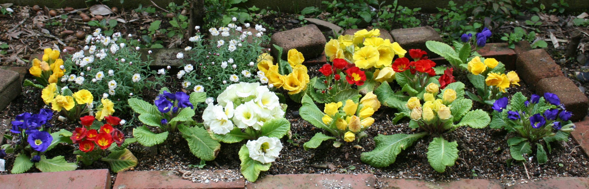

道場日記抄— その３ —２０１４年 ２０１３年 ２０１２年 ２０１１年 ２０１０年 |
上に書き加えています。 ２０１４年 ２０１３年 ２０１２年 ２０１１年 ２０１０年 年度の下に見出しを 付けてあります。 |
「道場日記抄」−２０１３、１４年へ
その１（１９９９〜２００３年）へ その２（２００３〜２００９年）へ
「案内所」の扉へ トップページへ
ー2014年ー
Oct.30＜合格答案＞ Oct.2 ＜御嶽山噴火＞
Sept.4 ＜急秋＞ Aug.7 ＜町の鳴き龍＞
Jun.30 ＜まねサイト＞ May 29＜スクーリング＞
Apr.24＜プログラムと問題分析＞ Mar..27＜国語力＞
Feb.20 ＜雪の朝・出発＞ Feb.13 ＜雪の朝・合格＞
Jan. 1 ＜お年賀＞
Oct.30 ＜ 合格答案 ＞
受験生の答案のコメントに、「合格答案」という言葉を使うことがよくある。「理屈をこねないで、事実をもとに考えを書けば、合格答案になるよ」とか、「もう一息だ。文章を整えれば、Ａランクの合格答案になる」等である。
すると、「合格答案というのは、いったいどういうものなのですか」という質問が、時々寄せられる。たいていはお母さんからだ。受講を始めて間もない頃に多い。
一応、次のように答える。「一概には言えない。８０人が合格すれば、８０通りの合格答案がある」。算数・数学とは違うのだ。答えは１つというわけではない。むしろ、多様なのだ。
すると、「では、合格答案には決まった形はないのですか」と、質問が続く。基本の形はある。作文なら、二段構成。小論文なら三段論法で、これらは「書き方」として、このホームページで既に公開してある。しかし、質問者はこれらを見ていないフシがある。
そこで、止むなく、合格答案に共通する点として、「話の筋が通っていて、考えに裏付けのあるもの」と補足する。あとは、具体的には添削答案を見てもらえばよいのである。
たいていはこれで済むのだが、質問は続く。中には的外れのものもあるが、指導上の教訓になるものもあるので、いくつかを書き留めておく。
「うちの子は時間内に書き終わらないのです」。それに対しては、「最初から時間内に書けるものではない。例えば小学生にとって、入試問題は見たこともないような形式であり文章なのだ」と答える。そこから、受講を始める生徒には次のようなアドバイスが生まれる。「最初はガーンと壁にぶち当たったような感じがするだろう。だが、答案練習というのは山登りのようなものだ。何時間かかってもよいから、とにかく書いてみよう。そうすれば、やがては頂上に着くように、何とか書けるようになるものだ」。
これには、次のようなことも書き添える。「知らないことがあれば、辞書、事典を見てもよいし、インターネットで調べてもよい」。すると、「でも、本番では調べるわけにいかないではないですか」とくる。「今は本番ではない。不十分な答案を書き連ねるより、合格答案とはどういうものあるかを知るほうが肝腎だ。それによって、己の知識の不足を知れば、知識の取得を心がけるであろうし、何より本番では、合格答案を目差して、持てる知識の動員を図るようになるものだ」。
それでも、「合格答案の書き方を教えてほしい」と言う。「だから、今練習をしているのではないか。始めたばかりだから、すぐに合格答案を書けるとは限らない。お子さんは発展途上にある」と答えても、満足できないようだ。そのようなお母さんは、この段階ではもはや聞く耳を持たなくなっている。自分の考える答えと合わないと納得しないのだ。
そこで、そのようなお母さんは合格答案を探し求めて、いわばネット遍歴を始め、下記の『まねサイト』のようなところにはまり込むことになる。
ここで注意しなければならないのは、多分に「紋切り型」の弊に陥りかねないことである。似たような答案が並んだ場合、学校側はどう判断するであろうか、いうことについては論を待つまでもない。
では、紋切り型でない合格答案を書くにはどうすればよいか。それはここには書ききれない。答案を仲立ちにした、生徒とのやり取りによってしか言えないことであるからだ。
Oct.2 ＜ 御嶽山噴火 ＞
噴火から２日後の朝、次の作文が届いた。北杜市（山梨）の楓さん（小６）からだ。
９月２７日に、長野県と岐阜県の県境にある御嶽山が噴火しました。 私は山に登ることが好きで、夏休みにも燕岳に登ってきました。もし、燕岳の頂上でお弁当を食べている時に、燕岳が噴火したら、私はどうなっているだろうと考えると、とても恐ろしくなりました。そして、そういうことが御嶽山で起こったのだと考えると、いっそう恐ろしくなりました。 地震や噴火などの自然災害はいつ起きるか分からないので、もう一度対策を確認しておくことが大切だと思います。家のどこに食料や非常持ち出し袋があるのか、どこに避難するのかなどを、家族で話し合って確認することが大切だと思います。 自然災害は決して防げないものなので、災害が起きた時にできるだけ被害を少なくし、自然とうまく付き合っていきたいなと、今度の噴火を見て思いました。 |
噴火の翌日は日曜日であったから、その日に書いたのであろう。短時日で書いたにしては、自身の体験になぞらえた恐ろしさと災害への備えの大切さがしっかり述べられている。内容、構成とも完璧といってよい。
この作文は、道場の通学生にとって、題材の選び方のよい参考になり、また、大いなる刺激にもなった。
一昨日の火曜日（３０日）には、５年生の耀くんと６年生の孟くんの２人が、書くことがらについてともに思案していた。そんな時はすかさず「昨日のこと」を書くよう指示する。朝起きてから夜寝るまでのことを、メモふうに書いていくのである。そうすれば、平凡に思われる一日にも何か一つはトピックがあるものである。
耀くんは、社会科の時間に食料自給率についてのテストがあったということから、「食料自給」について、孟くんは、６時間目に委員会があって委員長に選ばれたということから、「委員会委員長」について書くことになった。
そのあとで「御嶽山噴火」の作文を読ませると、一人は「あっ」と声を上げ、もう一人は「う〜ん」とうなった。２人とも、これからはニュースをよく見るようになるだろう。
Sept.4 '14 ＜ 急秋 ＞
今年の秋は突然訪れた。急なことだったので、「急秋」という感じであった。
例年、立秋を過ぎても、なかなか涼しくはならない。むしろ、夏真っ盛りといった日が続く。それを江戸時代の大坂の俳人は次のように詠った。「そよりともせいで秋立つことかいの」（上島鬼貫）。
しかし、秋は忍び寄っているのである。
『徒然草』に、「春暮れてのち夏になり、夏果てて秋の来るにはあらず」（第１５５段）とあり、その後に、「春は春のうちに夏の気配を起こし、夏にはすでに秋の気配が通い始め、……」と続く。秋は猛暑の裏に潜んでいるのである。
それは通常、次のように現れる。
「秋来ぬと目にはさやかに見えねども風の音にぞおどろかれぬる」（藤原敏行…古今和歌集）。景色を見ていても、はっきりとは分からないが、ふと通り過ぎる風の気配に思わずはっとさせられる、というのである。確かに、暑いさ中に一瞬、ひんやりした気配を感じることがある。
われわれ日本人は、このような季節の微妙な変化を愛好してきた。
近年では、甲子園で決勝戦が終わって選手たちが場内を一周するころ、赤トンボの舞っているのが見えることがある。熱戦の後だけに、それがいっそう爽やかさを感じさせ、その光景が秋の風物詩ともなっている。
そのように潜行していた秋が突然姿を現したのだ。東京地方、あるいは、関東地方だけであったかもしれないが、８月３０日のことだった。
前日まで空は雲に覆われ、雨が断続して降って、じめじめと蒸し暑い日が続いていた。それが、３０日になって空は晴れ渡り、涼しい風が吹き渡ったのだ。
Aug.7 '14 ＜ 町の鳴き龍 ＞
「ガードの下にも鳴き龍がいるよ」 小6のＦくんが教室へ入ってくるなり、誇らしげに言った。
「鳴き龍」というのは、日光東照宮の本地堂（薬師堂）で聞かれる、あの音のことである。天井に描かれた龍の絵の下で拍子木を打つと、コロコロという音が聞こえる。
この話のきっかけは、修学旅行（移動教室）の作文で、鳴き龍に触れたものがあったことによる。
日光の三大名所といえば、東照宮、華厳の滝、戦場ヶ原であろう。そのうち、東照宮について書いた作文では、陽明門のほかに、三猿、眠り猫、それに、鳴き龍が登場する。
作文を見ながら、「なぜ、あんな音がするのだろうね。天井にだれかがいて、木の鈴でも振っているのかなあ」と冗談も言いながら、「あの音は、団地のような建物のあるところで聞かれるかもしれない。4〜5階建ての建物の間で手を打つと、コロコロという音のすることがある」。
すると、俄然興味を示したのがＦくんである。
Ｆくんの後についてガード下に行ってみた。手をたたくと、なるほど、かすかにコロコロと聞こえる。「もっと大きな音のする所を探してみよう」。
Ｆくんは、「夏休みの自由研究にしようかなあ」と言う。本気のようだ。
以来、１〜２時間のサイクリングをする時は、途中に団地があれば、必ず立ち寄って、データ集めに協力している。
これらの実験例を活用して、Ｆくんが「鳴き龍の原理」を解き明かしてくれるのを楽しみにしている。
Jun.30 '14 ＜ まねサイト ＞
「ご存知でしょうか？ 先生の「作文道場」から問題を抜粋されています」
先日、こんなメールが届いた。
「公立中高一貫校作文・小論文講座」と称するサイトだそうで、ＵＲＬも付いていた。
覗いてみると、なるほど、そっくり利用されている。間違えたタイトルもそのまま引用されている。ゆっくり見ている暇はないが、この分では答案例も引用されているかもしれない。少し形を変えた答案が目につく。
サイトの主は、東大卒とある。本業は別にあるようだ。
たまたま訪ねてきた同業の友人にこの話をすると、「まあ、そういう人間もいるだろうな」ということであった。彼は理数系を得意としている。
「だが、……」と、彼は続けた。「『塾は儲かる』という風評に惑わされて手を出しているのかもしれないな。本気で指導しようと思うなら、そもそも課題や問題文の吟味を自分でするはずだ」。
友人は続ける。「警告を発しても抗議をしても、聞く耳を持たないだろうが、あまり気に留めることもなかろう。というのは、オリジナリティーのない者には指導力もないだろうからだ。だから、解答例もつまむのだろうが、それ以上の指導はできないだろう」。
「例えば、作文の添削は、料理にも似ている。立派なレシピがあって、それを使っても、料理人によって味が違ってくるようなものだ」。
「火加減一つで料理の出来が違ってくるのと同様、筆加減一つで作文の仕上がりが違ってこよう。ものまねサイトのことはほっといてもいいのではないか。今に評価が表れるだろうから。ただ、そこの子どもたちがかわいそうだな」。
と、なると、やはり警告はしておこう。社会正義のため、子どもたちのために。
May 29 '14 ＜ スクーリング ＞
「なかなか家で集中できず、できたら今週末も伺いたいのですが、日曜日の空いている時間はありますか？」
Mくんのお母さんからだ。新学期になって、時々こんなメールが入る。新6年生の、公立中高一貫校を目指す諸君に多い。それは、いきなりの入試問題で「大きな壁にぶち当たった」感じがして、問題によっては手が着かない状態に陥るためだ。
受験生のプログラムには、当該受験校の過去問を毎月1題配してある。月4回のうち、ほかに他校の類題を1〜2題、作文を2〜1題課している。
Mくんが受ける学校の課題文は、例えば「利休の美学」というふうな内容で、大学入試でも使えそうなレベルの文章だ。
Mくんには、講座を始めるに当たって、「入試問題の文章は始めは難しく感じる。だから、2度、3度と、分かるまで読んでみよう。時間はどれだけかかってもよい。『読書百遍、義自ずから通ず』。昔の中国の言葉で、『どんな難しい書物でも百回読めば、意味は自然に分かってくる』という意味だ」と話しておいた
道場には「月1回のスクーリングと添付メールによる通信添削講座」というコースがある。Mくんはこのコースで受講している。他に、「ファクスによる通信添削講座」などがある。
これらの講座で、何か分からないことや質問があれば、たいていの生徒は電話をかけてくる。メールで質問してくる生徒もいるが、首都圏では、直接道場にやってきて作業をする受験生もいる。
Mくんには、課題文の要点を段落ごとに書き出してもらおう、そうすれば、設問の「遠近法」には要点を拾い集めることによって答えられようと考えていた。ところが、書いてきた解答はほぼ題意に適っている。読解に慣れてきたようだ。思えば、練習を始めて3か月近くになる。若干の字句修正で済んだ。「よかった。合っていた」と、Mくんは胸をなで下ろし、これに気を良くして、もう一つの設問にさっさと取り組んだ。
通信講座の生徒には、できるだけ丁寧に、具体的に、詳しく答えることにし、場合によってはファクスで図解もするが、道場に来て直接話をすれば、作業がはかどるほかに、安心感もあるようだ。
Apr.24 '14 ＜ プログラムと問題分析 ＞
「はい、これがあなたのプログラムです」。
2月から3月、4月にかけては、このような言葉とともに、新たな練習・演習が始まる。
プログラムは、受験用の場合は希望校の問題（過去問）を中心に、類題（出題形式や内容の似ている他校の問題）を援用して作成する。（もちろん、作文も組み込んである。これは体験例のストックのためである）。
類題を援用するのは、希望校の問題だけでは視野が限られるのと、これだけでは練習量が足りないためである。幅を広げ、ある程度の予想もしなければならない。例えば、読書や言葉の出題が続いていても、それがいつまでも続くとは限らない。現在の社会情勢からすれば、環境問題が出されることも想定しておかなければならない。
そうかと言って、あれもこれも取り込んでいては、方向を見失いかねない。やはり中心は希望校の出題傾向である。これを類題によってふくらみのあるものにする。プログラム作りにおいて大切なのはこの点である。類題に良問を得ると、プログラムは充実する。
そこで今春は、「暇なうちに」、全校の問題分析に取りかかることにし、まず、公立中高一貫校の問題に着手した。
公立中高一貫校は全国に約１００校あり、過去問は手元に9年分がある。分析の基準は問題文の種類と長さ、設問の形式、字数である。
この基準で、1校ごとに9年分（後発・新設校の場合は３〜6年分）の分析表を作成していく。100校あると言っても、県立中の場合は２〜3校で共通というケースが多いから、実質は７０校分である。作業は意外に早く進んで、４月半ばには７０通りの一覧表が出来上がった。
これさえあれば、鬼に金棒のようなものである。どの学校をうけるにしても、プログラムの中心がはっきりとし、類題を縦横に選べる。
受験生には希望校の分析一覧表を見せて、「これをもとに、このプログラムができているんだよ」と話す。受験生は毎週順に過去問、類題、それに、作文に取り組んでいる。
Mar..27 '14 ＜ 国語力 ＞
『ゾウの時間 ネズミの時間』（本川達雄著 中公新書）。この魅力ある著書を、Ｓくんは今週読み終えた。
本書には題名からして魅力があり、実際、「生物界には車輪がない」とか、「島に隔離されたゾウは、……どんどん小形化していった」とかのくだりは、入試問題にもよく引用されている。
Ｓくんは４月から高校生になる。１月末に推薦入試で合格した後、引き続き「国語力をつけたい」ということで、高校入学後も受講を継続することになった。入学後は主に教科書の文章を使って要約の練習をすることになっているが、教科書が手に入るまでの間、２か月もあるから何か１冊を読んでみようということになった。
手元にあった『バカの壁』（養老孟司著）や『国家の品格』（藤原正彦著）、『本を読む本』（Ｍ．アドラー、外山滋比古訳）など５〜６冊の中から、Ｓくんは『ゾウの時間……』を選んだ。本書は１４章あるから、１週（１回）に２章ずつ読んでいけば、春休みの頃には読了する計算である。
１〜２日もあれば読めるものを、なぜ２か月近くもかけるのかと問う向きもあろうが、この読書法のねらいは、実はその点の批判ないし反省を原点としている。例えば、１〜２日で読んだ場合、「読んだ」とはいっても、「理解した」かどうかは怪しいものである。それは、「どんな話だった?」と聞いてみれば、すぐにわかることであるが、たいていの読書は「上滑り」なのである。
なぜ「上滑り」になるかというと、日本語で書いてあるものは「何となく分かる」からである。それを正しい、あるいは、じゅうぶんな理解にもっていくためには、順を追って読み取っていく必要がある。書いてみて初めて「分かった！」となる。そこに要約の必要性が生じるわけであるが、具体的な手順としては、例えば説明・論説文の類いなら、「段落の要点」をつかんでいくことが基本となる。
ついでながら、初心者には特にこの作業が望まれる。道場では、作文を主とする生徒にも、時どき教科書の文章を使ってこの作業を課すことがあるが、そうすると、要約力の程度が通知表の成績と相関関係にあることがわかる。このため、小中学生の親御さんには教科書の勉強を望む声もあり、新学期からは小中学生に「作文と国語・学習プログラム」を作ることにもなっている。閑話休題。
話を『ゾウの時間……』に戻すと、1週に２章とはいっても、１章当たり平均１６ページあるから、また、内容が多分に専門的であるから、読解が容易ではない。それでも、１章当たりの字数を２００〜３００字とした。これは、一度読んで理解できる長さでないと、内容を把握したとは言えないからである。進め方は１章を宿題とし、もう１章を教室で行うことにした。これなら、じっくり取り組めるし、点検もじゅうぶんに行うことができる。
こうして、１冊を読了したわけであるが、ここで、「国語力」とはどういうものかを明らかにしておかなければならない。それは、せっかくくの読書を単に「読んだ」で終わらせないためである。
「国語力」とは、「読解力・想像力・記述力」が三要素として挙げられる。その最も基礎を成すのが読解であり、要約である。
近年では大学入試においても、公立中高一貫校においても、その三要素が問われる出題となっている。事実、オーソドックスな入試では長文や超長文が課されているため、まずは「読解」がきちんとできなければならない。
なお、国語力は、間際では間に合わない。ここにおいても「ふだんが大事」と言えるが、要約の作業には「頭脳を鍛える」という効果もあり、教科全般の基礎ともなるのである。
Feb.20 '14 ＜ 雪の朝・出発 ＞
１週間足らずのうちに東京地方（あるいは、太平洋岸）はまた大雪に見舞われた。予報では東京は１０ｃｍということであったが、郊外のこの辺りでは優に５０ｃｍを超えていた。道場では１４日（金）、１５日（土）の授業を止む無く休みにした。
記録しておくべきは、中部・関東の各地で「陸の孤島」となった市町村が続出したこと、高速道路や幹線道路でトラックが３日間も立ち往生したことである。
甲府では観測史上初めての１ｍを超す大雪との報だったので、どんな様子なのか、友人に電話をしてみると、「陸の孤島だ」というのが第一声だった。そこは石和温泉郷のすぐ隣の住宅街なのだが、周りには畑も多い。友人宅も１００坪余りある。「車を出すには雪をどかさなければならないが、その雪を捨てに行かなければならない。川に捨てるのだが、そこまでの道も作らなければならない」。気の遠くなるような話だ。
食糧については、「米はじゅうぶんあるのだが、問題は副食だろうね。あちこちから何か送ろうという電話があるのだが、この雪ではまず届かない」。鉄道も道路も全て遮断されているのだ。県全体が「陸の孤島」の観を呈している。
甲府盆地でこの状態なら、八ヶ岳山麓ではどうなのだろう。北杜市の大泉にはTくん（小５）が住んでいる。作文を返しがてらに聞いてみると、お母さんから次のようなメールがあった。
………………………………………………………………
こちらも陸の孤島です。 積雪は１ｍ５０ｃｍはあったでしょうか。
おととい、玄関から駐車場までの雪掘りで２メートルの雪壁ができました。圧巻な眺めで自己満足に浸ってしまいました（笑）。そして車を掘り出すまでになんと４時間。まだ家の前の車道は胸まで雪があり、除雪車も当分来てくれそうもありません。
息子はプラスティックの橇を浮き輪に雪の中を泳ぎながら一番近くの友達の家まで遊びに行くという状態です。学校はもちろん休校で、子供たちと犬は大喜びで外で雪まみれで大はしゃぎです。
食糧は一応非常時に備えてストックしてあるので、痩せることはないと思いますが（残念！）。
………………………………………………………………
大雪になる前の日（木曜日）の夕方、隣市の府中からYさん（中２）がお母さんと訪ねて見えた。「都立高入試の２００字の作文が書けるようになりたい」と言う。これは、入試問題の国語の読解問題の中にある。配点からすれば１０％であるが、読解ができなければならない。そうすると、そこだけでも３０％の労力を要する。よって、作文がきちんと書けるなら、国語力もつくであろう。
これを核とし、各年度の入試問題を中心にプログラムを組むことになった。
３月から７月までは、各月、入試問題１、作文２（標準課題１、身辺作文１）、読解問題１（類題、教科書の主要文の要約）とし、８月以降は、受験校が決まったら、身辺作文に代えて「進学指導重点校」の問題を入れることにした。文章の要約を入れるのは、国語力のみならず作文力の向上のためであるが、教科書の文章を使うのは定期試験対策のためでもある。
入試の作文の分析は済んでいるので、また、ちょうど大雪で休講状態となったため、プログラム作りの作業ははかどった。１５日には年間プログラムを届けることができた。
すると、１７日の朝、お母さんから、次のようなメールが届いた。
………………………………………………………………
プログラムをありがとうございます。
見識の高さとプログラムの素晴らしさに感銘を受けました。
やはり専門家は違いますね。
試験対策は大変助かります。
………………………………………………………………
今月から３月にかけては、プログラム作りの時期でもある。
東京学芸大学附属国際中等教育学校、長野県立諏訪清陵高校附属中学校、山梨・北杜市立甲陵中学校、東京都立立川国際中等教育学校のプログラム作りが控えている。
プログラムを以って、生徒諸君は新たな出発となる。下記の「のび太くん」のように、１年間休まずがんばることを切に願う。
Feb.13 '14 ＜ 雪の朝・合格 ＞
先週８日から９日にかけて、東京地方（あるいは関東地方）は大雪に見舞われた。天気予報のとおり、８日の未明から丸１日降り続いた。東京では２７㎝で４５年ぶりのことだという。都心でそのくらいなら、郊外のこの辺りでは３０cmは悠に超していたことだろう。実際、夕方庭に物差しを突っ込んだら、２５㎝はあった。
そんなわけで、千葉で観測史上初の３３㎝というニュースには驚かなかったが、仙台で７６年ぶりに３５ｃｍを記録したというニュースには驚いた。仙台は東北にあるから、雪が多いだろうと思っていたからだ。一口に東北と言っても、奥羽山脈によって日本海側と太平洋側に分けられていることを改めて知らされた。
８日（土）の朝は、降りしきる雪の中を９時に小５のMくん・小２のMちゃん兄妹がタクシーで、続いて中３のMさんがお父さんの運転で駆けつけ、１０時半には小６のYちゃんが加わった。
１１時近くになってMちゃんが作文を書き上げた。それを待って兄妹が帰ろうとしたところ、雪の影響が深刻になってきた。
タクシーを呼んだが、来た時の会社であったのに、運転手が足りなくて都合がつかないと言う。もう一つの会社はお話し中でなかなかつながらない。止む無く、駅まで歩いて１駅電車に乗って、また歩くか、ということにしたが、お兄ちゃんはそれなら歩いて帰るという。お母さんはタクシーがない時はそうするようにと言ったと言う。家までは直線距離にして３ｋｍはある。幸い２人とも長靴をはいていたので、家とは連絡の取れないまま送り出す。
４０分ほどしてお母さんから「無事着いた」という電話があった。「私は福井育ちで、１ｍぐらいの雪の中を通学していたから、このくらいの雪は……」とおっしゃる。
１２時になって、Mさん、Yちゃんにお迎えがあって、激しくなった雪の中を帰って行った。雪はもう１０cmほどになっていた。
２台の車を見送って中へ入ろうとしたとき、雪かきの音がした。奥のほうの家のKじいさんがさっそく始めていたのだ。道場の前の道路は、そのおじいさんの家の前から通り道がつけられていく。そこでこちらも、と思ったが、この降りようではすぐに埋まってしまうだろう。「Kさん、この雪がやんだら、ぼくも始めますからね」と声をかけておいた。案の定、道路はほどなく真っ白に埋まってしまった。
９日（日）は８時ごろにはもう雪かきの音が聞こえた。出てみると、左斜め前のHさんだ。既にKじいさんの家の前には公園への道が通じていた。Hさんといっしょに、向こう三軒両隣の間の雪をかいて道をつけた。
部屋に戻って汗を拭いているところへ電話が入った。「合格しました｝。Sくんからだ。Sくんは都立中高一貫校の中でも最難関と目される武蔵高校附属中を受けた。理科方面が得意だったから、いわゆる適性検査では得点できるだろう、問題は作文だった。
当初から、課題文の要点（ポイント）はつかむのだが、なかなか文章にならない。それでも、正月を過ぎてから文章が分かりやすく整ってきた。お母さんには、「何とか間に合ったかな」と話していたのだが、間に合ったのだ。
Sくんは「ドラえもん」に登場する「のび太」に表情が似ている。そのため、道場では「のび太くん」と呼ばれているのだが、のんびりしているように見えて、彼は１年間休まずに通った。思うに、その持続が間際に結実して、快挙となったのであろう。
２０１３年−
Nov.28＜千両の庭＞ Nov.4 ＜広瀬の柿＞
Oct. 7 ＜「抜かす」、「なので」＞ Aug.29＜猛暑と豪雨＞
Jul.18 ＜安里有生くんの詩＞
Jun.20 ＜たから探し＞ May30＜作文打出の小づち＞
Apr.22＜新学期の取り組み＞ Mar.28＜作文玉手箱＞
Feb.28＜演習プログラム＞ Jan.31＜The longest day＞①②③
Jan.17＜雪かき＞ Jan. 1＜お年賀＞
Nov.28 '13 ＜ 千両の庭 ＞
「赤み差し千両庭の景となる」
千両というのはお金のことではなく、常緑低木のことである。念のため。
１０月の初めごろであったか、鉢植えの五色の朝顔が最後の花を咲かせて以来、道場の庭には（といっても、５坪ほどの細長い庭なのだが）、緑のほかに色彩がなくなってしまった。
4〜5年前までは、殺風景な庭をせめて花でも植えて生徒たちを迎えようと、パンジーやビオラ、ニチニチソーやマリーゴールドなど、ホームセンターで手軽に手に入るものを植えていたが、ある時ひょっこり水仙が咲き、やがてチューリップが咲いた。前の年に植えた花の球根が残っていたのだ。
7月になると、ユリが、自慢したいほどに、色とりどりにあちこちに咲く。その間には、シャクナゲが咲く。これは木がそのままになっていたのだ。もともと植えてあったツツジやサツキは時期がくれば満開となり、キンモクセイは芳香を漂わす。
こうして、いつしか花は自然に任せることになった。
ところが、色彩がなくなると、寂しい。今ごろ咲く花を少し探して来ようかと思っている折、庭の一角がほんのり明るくなっている。日の差し加減かと気にも留めなかったのが、日がたつにつれて明るくなっていくように思われ、よく見ると、小粒の実の群れが赤く色づいてきているのだ。千両の実だ。
千両の木は幅1メートル足らず、高さ50センチ余りで、庭の3か所にあることが分かった。今では実がすっかり赤くなって、庭を豊かな風景にしてくれている。
付記：
千両の鉢を買った時、万両もいっしょに買ったから、庭のどこかに移し替えたはずだと思っていたところ、庭の隅に黄色い粒が現れ始めた。正月頃には色鮮やかになることだろう。
そうなると、「千両に万両ありて明けの春」という句も生まれよう。
Nov.4 '13 ＜ 広瀬の柿 ＞
先日、山梨の笛吹市在住の友人が柿を送ってくれた。きれいな段ボール箱に並べられている。ぶどうなどと同じように、本格的な商品の装いである。
春先に中学の同級会で会った時、その友人は、ひょんなことから柿畑の世話を頼まれて、いつの間にか譲り受ける格好になったという話から、秋になったら送るよと言っていたのを思い出した。気軽に言ったのを気軽に聞いていたから、そんな立派な箱で届くとは、思ってもみないことであった。
友人に礼の電話をする前に１個を試食した。切ってみると、中はいわゆるゴマである。スーパーで買ったのは切り口がのっぺりしていて、渋柿を切った時の面に似ている。それに比べると、いかにも甘そうである。昔懐かしい思いもしてかぶりつくと、皮に張りがありながら果肉はやわらかい。もちろん、じゅうぶんに甘い。
友人にそのことを話すと、「実は、全国の柿の中でも非常に評判が良くて、皇室への献上品になっているほどだ」ということであった。そこで、品種は何かと聞くと、「『広瀬の柿』と言われている」ということであった。
そういえば、同級会で「彼は５５本の柿畑のオーナーになったそうだ」という話が出た時、「ああ、広瀬の柿ね。おいしいので有名なのよ。でも、めったに手に入らないの」と、だれかが言っていたのも思い出した。
「広瀬」というのは、友人が住んでいる土地で、石和温泉郷に境を接している。
めったに手に入らないということは、収穫量が少ないということであるが、友人によると、「同じ畑の木をほかの土地へ植えても、同じ味にはならない」ということであった。そうすると、味の決め手は土壌ということになるが、何とも貴重な柿を送ってくれたものだ。
付記：
読者から、「広瀬の柿の品種は富有柿ではないか」という問い合わせがあった。そのとおりだった。（Nov.11)
Oct. 7 '13 ＜ 「抜かす」、「なので」 ＞
台風18号、20号が去った後は、抜けるような青空が1週間ほど続いた。これは、「運動会日和」でもあった。「秋晴れの運動会をしているよ」（富安風生）。こんな光景が全国あちこちで見られたことだろう。
運動会があると、作文は「運動会づくし」の観を呈する。
書き方について、特に初めての生徒諸君には「最も感動したこと」、「思い出に残ること」など、どれか一つに焦点を合わせること、その際、焦点は運動会全体の中で絞り込むこと（「鳥観図」の中で合わせること）を勧める。
具体的には、「スポーツ作文」の『１５．十人タワー』、『１４．中学年リレー』、『１１．感動の四段タワー』、『１０．クラス対抗リレー』等を参照。こちらへ。
前置きが長くなったが、このところ、運動会の作文で目につくのは「抜かす」という言葉である。例えば、徒競走やリレーで、「第３コーナーでぬかしたが、ゴールの手前でぬかされた」といった具合である。
ほとんどの生徒がそうであるから、もう一般化しているのかなと思うが、一応「追い越す」ことは「抜く」というのだと話して、次のような話をする。。
「『抜かす』というのはね、『馬鹿なことを抜かす』とか、『順番を抜かす』というふうに使われている。辞書を引いてごらん。『抜かす』には『抜く』という意味はないね。辞書に載っていないということは、社会でまだ認められていないということなのだ」。
だから、使ってはいけないとは言わないが、使わないほうがよい、と注意しておく。
使わないほうがよいというのは、それは「話し言葉」だからである。現代語にも「話し言葉」と「書き言葉」があり、作文では（特に地の文では）「書き言葉」で書くことが求められている。そのわけは、格調ないし気品の問題でもある。
話し言葉と言えば、よく使われているものに、「なので」がある。これも辞書には載っていないから、作文では使わないようにと注意しておく。ただし、これは「格調」の面からの勧告でもある。
同様の勧告は、「ら抜き言葉」においても行う。例えば「見れる」、「食べれる」の類いである。
とはいえ、例えば、かつては「書かれる」、「泳がれる」と言っていたものが「書ける」、「泳げる」となって、五段活用の動詞に限り可能動詞として公認されるようになった。この伝でいけば、活用の種類に関係なく、「見れる」も「食べれる」も、やがて公認されるであろう。
そうなると、「なので」も「抜かす」も、作文においてのみならず、公的文書の上でも大手を振って歩くようになるかもしれない。ただし、それを使うか使わないかは「感性」の問題である。
Aug.29 '13 ＜ 猛暑と豪雨 ＞
「これまで経験したことのない大雨となっています」、「直ちに命を守ろ行動をとってください」。
先月来、集中豪雨（ゲリラ豪雨）が山陰の山口、島根、また、東北の岩手、秋田の市町村を襲ったとき、気象庁がこのような言葉で警戒を呼びかけた。まさに、「今までにない」表現である。ずいぶん砕けている。だが、分かりやすい。「直ちに」避難を始めるには至らなかった人が多かったということであるが。
「日本政府に、被爆国としての原点に返ることを求めます」。
これは、今年の長崎平和祈念式典での田上長崎市長の平和宣言の中の言葉で、今年４月、核不拡散条約（ＮＰＴ）再検討会議準備委員会での共同声明に、日本政府が署名しなかったことへの批判である。
性質は異なるが、今月の言葉として、この２つを記録しておきたい。
共同声明に署名しなかったことについては、憤懣やる方なさとともに不可解さを覚える。そこで、道場も被爆国の一端に連なる者として抗議の声を上げておいた。「世事雑感」−「世にも不思議な物語；日本政府の怪」へ。
豪雨の反面、日本列島を覆っていた猛暑も収まる気配で、東京地方では４日前の日曜日からパタッと朝が涼しくなった。午前中はクーラーが要らないほどである。それでも日中は３０度を超える暑さであるから、１０時ごろから気温の上がるのが感じられる。。そこで、生徒たちに「暑いか」と聞いてみると、「平気」だと言う。むしろ、クーラーを敬遠気味である。
かくして、このところは時折窓から入ってくる風に吹かれながらの、作文や読解の作業となっている。
Jul.18 '13＜ 安里有生くんの詩 ＞
6月23日、沖縄戦の全戦没者を悼む「慰霊の日」の追悼式で、小学1年生の安里有生（あさとゆうき）くんの詩が、本人によって読み上げられた。全文がひらがな、カタカナで書かれている。まだ習ったばかりの文字なのだそうだ。有生くんは日本の西端の与那国島に住んでいる。
詩の一部を引用してみよう。全文は33行あるから、これはその3分の1である。
| へいわってなにかな。 ぼくは、かんがえたよ。 （中略） やさしいこころがにじになる。 へいわっていいね。へいわってうれしいね。 みんなのこころから、 へいわがうまれるんだね。 （中略） ああ、ぼくは、へいわなときにうまれてよかったよ。 このへいわが、ずっとつづいてほしい。 （中略） へいわってすてきだね。 これからも、ずっとへいわがつづくように ぼくは、ぼくのできることからがんばるよ。 |
この種の作文では、たいていは「このへいわが、ずっとつづいてほしい」というところで終わるのだが、この詩では締めくくりが、「ぼくは、ぼくのできることからがんばるよ」となっている。平和への関与の姿勢が実に頼もしい。
以上、「作文」という見地からの感慨である。
Jun.20 '13 ＜ たから探し ＞
庭のユリが一本、今年もたくさんの蕾をつけて、2週ほど前から開き始めた。
まだ蕾のころの今月１日、都内からスクーリングで来ていたＳさん（中３）に、「何の蕾だろう」と聞いたところ、「分からない」と言う。「では、次に来るときには咲いているだろうから、楽しみにしているといい」と言っておいたのだが、２週間後の予定が月末に変更になった。そこで、お父さんのメールに写真を託したことだった。
近くの郵便局の軒先ではツバメが卵を温めている。生まれた子ツバメたちが口を開けて、にぎやかにえさを待つのももうすぐだろう。そのころにはカッコーもやってきて、近所の神社の椎の木で鳴き始めるだろう。
この日記抄からの抜粋のタイトルが「作文打出の小づち」と決まり、４つの分野を「作文編」「国語編」「小論文編」「閑話」とした。すると、思いのほか作業が進んで、４編の「もくじ」までできた。
各編はオムニバス形式にする予定であるが、取りあえず「もくじ」を公開することにしよう。こちらへ.。
各編とも、各項目には掲載年月日を付け、掲載年へのリンクも貼ってあるので、目当ての記事（項目）を探そうと思えば、リンクをたどって探すことができる。手前味噌ながら、いわば「たから探し」であるが、各年度とも十数項目であるから、探すのにさほどの困難はないであろう。
バスは７月上旬に発車の見込みである。
May 30 '13 ＜ 作文打出の小づち ＞
昨日、関東地方も梅雨入りした模様と報じられた。例年より10日ほど早いという。これも温暖化のせいか。
それはともかく、道場の庭のサツキが満開になった。例年、6月になってピンクの花をちらほらと付けていたのが、今年は両腕に抱えきれないほどの枝ぶりいっぱいに、びっしりと花を付けたのだ。しかも、花は薄い朱色に縁どられている。「まあ、きれい！」と、日菜さん（高2）がケータイを取り出して写真を撮っていた。
窓辺の、隣家の庭では白い大輪のアジサイが開き始めている。枝を刈りこんでいたので、往時のように高くそびえるというほどにはならないが、それでもドッジボールほどの花をいくつも咲かせることだろう。
道場の庭のアジサイは、入り口に1メートル半ほど、奥に1メートルぐらい葉を広げているが、蕾はまだ小さい。その代わりのように、教室の入り口ではキョウチクトウが白い五弁の花を４つ開いている。庭の真ん中ではユリが早や蕾を９つも付けている。これも早いようだが、去年のように庭を明るくしてくれるだろう。
さて、このところの余暇の大仕事は、下記の「作文玉手箱」（Mar.28)で試みている、これまでの日記の総ざらいである。
主な話を抜き出してみると、4つの分野に分ける必要がありそうだ。すなわち、「作文編」、「国語編」、「小論文編」、それに、「ちょっといい話」の４つである。
これらを統括するタイトルは何がよいか。「玉手箱」では、「開けてびっくり……」で、煙が出るようでは具合が悪い。いいものが出てくるということでは、「打出の小槌」がよいか。タイトルはそんなところに落ち着きそうである。
項目を整序して、特に「作文編」では補足もし、一書の体裁にしたいと思うので、連載を始められるのは夏になるだろうか。それとも、冬か。
Apr.22 '13 ＜ 新学期の取り組み ＞
Hinaさん（高２）の「電力と再生可能エネルギー」の草稿が一段落した。８００字詰めの用紙で１５枚ある。去年の１２月の初旬に始めたから、４か月かかったことになる。日菜さんの場合、このホームページにはいろいろな分野で登場しているが、引き続いて学校生活や旅行のことではテーマとして多少マンネリの感があった。そこで、時事性もあり、これからの社会の課題でもあるものをテーマに選んだ。
草稿は基礎資料でもあるので、どこかで論文の募集でもあれば、再構成して応募してみようというところである。
これはひとまず置いておいて、Hinaさんは次のテーマ「食糧自給」に取り組んでいる。自給率が近年低下している経緯を探ることから始めているが、これはおそらく「ＴＰＰ］との関係で論じることになろう。
時事性と言えば、Natsumiさん（高２）は理系の学部を目指して、去年の秋から本格的な取り組みを始めた。放射能や大気汚染、インフルエンザ等の時事問題を考えるに当たって、「時事用語」の理解から始めている。これは、Hinaさんの場合と同様、論述の基礎資料となるものである。
その一端を紹介しよう。こちらへ。
公立中高一貫校入試や高校推薦入試を目指す諸君は、既に「演習プログラム」によってスタートを切っている。プログラムがあれば、予定を立てやすく、確実に実行することによって充実感を味わうことができる。過去問（模擬問題）や類題のほか、４週に１回は作文が入っているので、身の回りを振り返り見回すことによって、足が地についた作業ともなる。
作文を主とする小中学生諸君には少々の変化が起きている。常々、ある文章を読んだとき、「何と書いてあったか」と聞くなどして、文章の要約の大切さを話しているのだが、４月になって、教科書の文章でその練習をしてみたいという生徒が増えてきたのだ。（下記：Jul.7'12「文章の要約の効用」参照）。
名古屋のＫａz（中２）くんと、沖縄のＥｌｌｅｎさん（中１）はこれに加えて国語の一般的なテキストに取り組んでいる。もちろん、プログラムを組んで、１冊分を１２か月（３６回）に配分している。Ｋａｚくんは文法にも意欲を燃やしているので、さらに１冊が加わっているが、Ｋａｚくんには去年１年の実績があるから、倍近い作業もこなしていくであろう。
Dream comes true：今月はもう一つ、トピックを記しておかなければならない。
早稲田実業がこの春甲子園に出場したことは、このページに２度ほど書いたことであるが、正直のところ、前年の夏の戦いぶりからして甲子園は「夢」と思われた。そこで、その夏、「道場と甲子園」（Aug.23 '12）で、期待を込めて「甲子園まんじゅうが待たれる」と書いたのだが、その夢が現実になったのだ。
春休みが終わるころ、Ｄくん、Ｋくんが記念タオル、キーホルダー、少々の「土」とともに、「甲子園ボーイクッキー」をもってきてくれた。通学生みんなで１〜２枚ずつ味わっている。
Mar.28 '13 ＜ 作文玉手箱 ＞
「まだ実の生っているのを切ってはだめだ」散歩の途中、ある家の庭から、そんな声が聞こえた。
「だって、枝が伸びすぎているんですもの」老夫婦が言い争っている。地面に落ちているのはキンカンのようだ。
「もうすぐ、実が熟れたら、小鳥が来て食べるだろ。それまで待ってやろう」
ああ、いいことだ。それも「思いやり」の一つだ。とっさに「思いやり」という言葉が浮かんだ。それというのも、「思いやり」という題を出されて、Eさんが何を書こうか思案していたからだ。
こういう題では、たいていの人は人への配慮を思い浮かべるであろうが、生きものに対する「思いやり」もあるのだ。そういえば、庭にエサ台を作っている人も少なくないようだ。
「大空に高く残れり柿一つ」。これはカラスに対する思いやりなのだそうだ。
この１０年余り、こんな話を折に触れこの日記抄に書き記してきた。読み返してみると、けっこう書き方のヒントになりそうなことが書かれている。
一応、日記は上に見るとおり保存してあるが、なかなか何年も前のところまでは訪ねてくれないだろう。そこで、役に立ちそうな話を抜き出して、ひとまとめにしようかと考えている。
そうすると、タイトルは何がいいだろうか。いい話がいっぱい入っているからトレジャーボックス、それを日本語で言えば玉手箱か、あるいは、打ち出の小づちのようなものと考えればよいか。ただいま思案中である。
箱といえば、このサイトを作成しているコンピュータが大きな箱になった。１０年ぶりのリニューアルである。
必要最小限のソフトで運営していたのだが、10年もたつと動きが遅くなる。かと思えば、メールが２，３通跳ぶなどする。そこで、拓生くんの卒業を待って、新しく組み立ててもらうことにした。拓生くんはこのホームページに「自作パソコン」で登場している。道場にとっては、最も信頼のできるアドバイザーである。
春分の日にいっしょに秋葉原へ行って、部品を買い揃えた。もちろん、必要なものは拓生くんにリストアップしてもらった。この先、たくさんの作文や写真を入れても10年は持つよう、容量はなるべく大きくしてもらった。外箱も大きなものになった。ふつうのデスクトップパソコンに比べて、幅２倍、高さ１．５倍、奥行き１．５倍はある。これは、コンピュータは熱がこもりがちのため、ハードウェアが傷まないようにするためなのだそうだ。何でもコンパクトにすればいいというものでもないようだ。
組み立ては２日ほどで終わり、２３日から試運転を始め、現在に至っている。
Windows 8やWord 13 が出たばかりで、これらをインストールしているため、これまでとはずいぶん勝手が違うが、メーカーに問い合わせ、拓生くんのアドバイスを受けながら、再びよちよち歩きを始めている。
今日はもう一つ、特筆しておかなければならないことがある。センバツ高校野球で、早実のKくん、Dくんが活躍しているのだ。
初戦の相手は、３７回目出場の龍谷大平安で古豪対決と呼ばれた。早実は６回までノーヒットで、２点リードされていたが、７回の裏に四球、初ヒット、ヒット、ワイルドピッチ、ヒットで４点を挙げ、逆転した。
特筆すべきはそのあとの８回、９回である。Kくんが３人ずつ、パーフェクトに抑えたのだ。
Dくんは途中出場でレフトに入り、逆転の場面で真芯でとらえていい当たりを飛ばしたが、サードの正面を突いてしまった。得点には結びつかなかったが、プレーには走塁にも守備にも躍動感があって、チームの勢いを感じさせた。
だが、３回戦で仙台育英に逆転負けを喫してしまった。
残念だが、KくんもDくんも、チームメイトとともに、自信と教訓を得たことであろう。
Feb.28 '13 ＜ 演習プログラム ＞
２月に入ると、道場には時間のゆとりが生まれる。高校の推薦入試は１月下旬に終わり、公立中高一貫校の入試も２月の初めに終わって、残るは都立高校一般入試の対策が残るだけになるからだ。
受験生が１人でもいる限りは、緊張を解くわけにはいかないが、それまで１人１人にかけていた時間の分が大きくぽっかりと空いてくる。
興行界には「二八（にっぱち）」という言葉がある。２月と８月は客足が遠のくことから、不入りの意味で使われているが、道場においても（塾業界全般のことなのだが）、８月はともかく２月は同様である。しかし、これは道場にとっては貴重な時間となる。それまでの目まぐるしさから開放されるばかりでなく、次なる準備のゆとりが生まれるからだ。
準備と言えば、通常はテキスト選びがあるが、最も大事なものにして、手間暇のかかるものにプログラム作りがある。これはこの時期に限られることではなく、新入生があるたびに作るのだが、希望校別に作るとなると、なるべく前もって類題選びなどをしておく必要がある。公立中高一貫校入試にせよ、高校推薦入試にせよ、年間プログラムとなると問題数はかなりの分量になる。
一例を示すと、——と、ここで相の手が入る。「手の内はあまり明かさないほうがいいよ。真似する所が現れるから」と。確かに、一種のプログラムの「あんなこと、こんなこと」を真似している塾もあるようだが、おそらくは形だけだろう。指導法などの核心は真似できるものではない。そう確信して、それでも、オリジナリティーの尊重を期待して、一端を紹介しよう。
私立の高校推薦入試の場合、入試までの約10か月の表を作り、その第1週に10題の過去問を配する。（私立の場合、入試問題はほとんど公表されないので、受験生からの情報をもとに過去問を作成する。そっくり同じに再現できるわけではないので、これを「模擬問題」と称するー「日記抄」Dec.1「模擬問題づくり」参照）。
過去問には文章題あり、グラフの読み取りあり、簡単な設問ありで多様である。内容や形式に応じて他校の問題の中から類題を拾い出す。最も手間暇のかかるのがこの作業である。この中から20題を選んで、プログラムの第２、第３週に配して練習（演習）問題とする（余った良問は「予備」として付加し、予想問題ともする）。
第４週は作文とし、面接にも備えて「特技」、「自画像」、「抱負」、……等を毎月１つ書くようにする。
公立高校の推薦入試、公立中高一貫校入試の場合もこれに準じて組んでいく。なお、同じ学校を受けるからといって、必ずしも同じプログラムになるとは限らない。書き慣れているかどうか等の個人差によって、プログラムは１人１人違ったものになる。
こうして受験生はそれぞれのプログラムを手に３月を迎える。
Jan.31'13 ＜ The longest day ＞
① 待つ」というのはつらいものだ。期待がある反面、心配も忍び寄る。
今月22日に東京、神奈川の私立高校の推薦入試があった。道場からは、例年になく8名もが受験した。
合格発表は、翌23日が成城学園と桐光学園、24日が日本女子大附属と早稲田実業だった。
23日は、例年どおり、9時から電話の前で待った。10時半に第一報が入る。成城学園組のＫさんからだ。Ｋさんは下記の「雪かき」にあるように、雨にも負けず雪にも負けず、遠路もいとわず通って、じゅうぶんに練習を積んでいたから、順当であった。それでも、勝利の味は格別である。会えば手を取り合って喜ぶところである。Ｋさんは「やっぱり直接会って話したいから行く」と言う。
この日は、あと２人だ。ところが、同じ成城組のＳさんからは午後になっても連絡がない。屈託のない性格だから、舞い上がってしまったのだろうか、「それとも、……」と、心配にもなる。冬休みの講習が終わった後、何となくのどかな感じがしたので、「試験の前日まで、今まで書いたものを読み返しているように」と、特に念入りに喝を入れておいたのだが、手ぬるかったかなとも思う。夜になって、「お陰さまで、」と、お母様からメールが入る。「待ちくたびれました」と、皮肉交じりのお祝いをする。
桐光学園を受けたはずのＣさんからはまだ連絡がない。理屈が先走りがちの答案も、間際に論文の基本のパターンが理解できていたから、試験自体はうまくいっただろうことは推測できる。まんじりともせず、といった思いのところへ、日本女子大附属を受けたＷさんから「合格しました」とメールが入った。今、速達が届いたのだという。
同校の問題では、グラフか文章の読解をもとに1,000〜1,200字の記述が要求されるが、Ｗさんはどんな課題も力強くこなしていた。大学入試にも通用しそうな答案を書いていたから、間違いなく上位で合格したことだろう。
② 明けて24日、早実の合格発表は「午前10時〜11時」とある。
10時15分、弾んだ声が入った。「合格しました」。一瞬、Ａさん、Ｋさんの、どっちかと思うほど、声に張りがある。Ａさんだった。最も気がかりだっただけに、安堵の胸を撫で下ろす。というのも、Ａさんは当初、いろいろなことを一度に書こうとする癖があった。そのために話がポコポコと中断される。その癖を直すのにかなりの時間を要した。最後の1週間は、「これまで書いたものは、書き直したものでもまだＢランクだ。読み直して、表現をすっきりさせよう」と、10編ほどの書き直しを指示した。
この指示はＫさんにも同様であったが、２人には「試験では当日勢いのある者が勝つ」と話して送り出した。2人ともスポーツ選手であるから、これはすぐに分かったようだ。Ｄくんがいる席では「勝負をする時には、緊張するものだ。緊張しない奴はダメなんだよね。それは試験でも同じだ」という話もしておいた。もしかして、「緊張しないでね。リラックスして受けるようにね」など言う人がいるかもしれないと思ったからなのだが、これは３人には言うまでもないことだった。
続いて、Ｋさんのお母さんから電話が入った。「受かってました」。マラソンでゴールをしたばかりのような声だった。Ｋさんの作文の弱点は具体性に乏しいことだった。最初の『私の夢』という課題では、せっかく全国大会に出場という実績がありながら、それに触れずにオリンピックでメダルを獲得したアイドル選手への憧れに終始する始末で、お母さんも歯がゆい思いをしたようだった。それは徐々に直っていったが、お母さんの心配の種がふくらんだのは、今年の出題の内容を聞いたときである。
今年は、阪神大震災や東日本大震災について考えていることを述べる問題であったが、例年と違っていたのは、「天災は忘れた頃にやって来る」等、４つの言葉を使って書くことだった。この問題は、試験の終わった後、Ｄくんが知らせてくれていた。一見、難しい。しかし、３人とも書いたということであった。相当の集中力を出して取り組んだのだろう。周りの大人の心配は、結果として杞憂であった。いい勝負であった。
１０時半過ぎにＤくんから連絡があって、すぐにご両親とこちらに向かうと言う。（早実は道場と同じ国分寺市内にあって、早実から道場までは電車で１駅、歩いて１０〜１５分ほどである）。Ｄくんは体格がよく、技術面、精神面ともに優れた有望選手である。野球談義に花が咲き、春のセンバツに早実が選ばれるかどうかがもっぱらの話題になった。
入れ替わりに、Ａさんがお母さんと現れた。別人のような表情で、ぐんと血色もよい。これまでは、作文が相当のプレッシャーになっていたと見える。名門早稲田というステップができたので、これで日本記録もさらに伸ばせるだろう。
早実を受けた生徒がもう１人いる。地方在住のため、やり取りはもっぱらメールで行っていたが、合否の確認だけはこちらからするのは憚られる。夜になって、「不合格でした。お世話になりました」というメールが入る。ユニークな特技をもっているので期待されたが、練習期間が短すぎたとだけ記しておこう。ある程度予期していたことではあったが、気が滅入る。
深夜になって、Ｃさんからメールが入る。１日遅れの朗報である。私立高校については、これで一段落となった。
長い１日が２日に及んだ。タイトルを”……days"としなければならないが、話はここにとどまらなかった。もう１日分が要るような出来事が起きたのだ。
——— 「合格速報」はこちらへ。または、トップページから。——ー
③ 一息ついた２５日は、春の高校野球「センバツ」の出場校が決まる日であった。
早稲田実業は秋の東京地区大会で準優勝していた。そこで、もし関東地区で有力校が他になければ、選ばれる可能性があった。その早実には、道場に縁のあるＤくん、Ｋくんがいて、レギュラーで活躍している。
出場校は午後の３時ごろまでに決まって、高野連から各校に電話で通知され、ラジオ、テレビでは夕方のニュースで報道される。
そこで、吉報は６時のニュースまで待つことにして、４時半から授業を始めた。ふと外を見ると、庭に坊主頭の学生服姿が２人現れた。一瞬、目を疑ったが、ＤくんとＫくんだ。知らせに来てくれたのだ。さっそく招じ入れて、握手を交わす。２人の活躍は人から聞き、新聞でも読んでいたので、話に花が咲くところであったが、２人は部の会合があるということで、お茶もそこそこに帰った。
早実は昨年夏の西東京大会では、準々決勝を前に敗退した。それが秋になって、あれよあれよという間に決勝に進んだ。
どうして急に強くなったのだろう。いろいろな話を寄せ集めてみると、それはどうやら投手陣の強化にあるようだ。その投手陣は「サースポー４人衆」と呼ばれ（中日スポーツ）、その中にＫくんが入っている。
Ｋくんは、元来は右翼でクリーンアップを打っているのだが、ダイナミックな投げ方が見込まれたのだろう。例えば外野のシートノックで、ホームに返球するときは鷲が翼を広げたよう格好で投げ、投げ終わった後も翼は大きく弾んでいる。あの投法ではバッターは威圧を感じるに違いない。
投手力のチームは守備力のチームでもある。いずれも接戦を制して勝ち上がってきている。その中心にいるのはＤくんであろう。レギュラーポジションはサードなのだが、時々はライトに回り、ダイビングキャッチや素早い背走によってポテンヒットや長打を防いでいる。
かつて、「野球でおもしろいのは、するほうも見るほうも、左中間、右中間をライナーで抜く２塁打、３塁打だろうね」ということなどを談じ合ったものだが、「今はそれを意識した練習をしています」ということである。甲子園では胸のすくような当たりがが見られることだろう。精一杯応援しよう。
教室の正面には、Ｂ４の紙に「祝 甲子園出場 早稲田実業 Ｄくん Ｋくん」と書いて掲げてある。
３日間は中味の濃い、張りのある日々であった。
"The longest day"という見出しは、同名の映画（邦訳名『史上最大の作戦』）からの借用であるが、中味の濃い１日１日を
long と感じた次第である。
Jan.17 '13 ＜ 雪かき ＞
3日前の「成人の日」、東京地方は時ならぬ大雪に見舞われた。「時ならぬ」というのは、気象庁も予期していなかったほどの雪の量であったというほどのことである。
朝の９時ごろは雨だった。１０時半に横浜市のKさん（中３）が受講に来る予定になっている。新横浜駅の近くから来るので、雨で予定を変更するかもしれないと思ったが、連絡はない。雨はやがて雪に変わった。Ｋさんは雪の中から傘をすぼめて現れた。
予定どおりに入試対策の作文講座を始める。Ｋさんは、書き直し書き直ししながら作文の仕上がっていくのが楽しいそうなのだ。談笑しながら進めているところへ、ひょっこりYouくん（小４）がやってきた。本来は夕方のクラスだから、「連絡してからでないと、ダメ」と言いたいところだが、既に帽子もジャンパーも雪まみれである。急いで雪をはたき落として招じ入れる。
正午過ぎに２人は帰った。庭の雪はもう３センチぐらいになっている。Youくんはお母さんが近所のスーパーの駐車場で待っているということで安心できたが、Kさんは駅まで１５〜２０分歩かなければならない。「滑るといけないから、一歩一歩ゆっくり歩いていってね」と言うのが精一杯で送り出す。（夜に届いたメールによると、電車に遅れが出て、家に帰るのに３時間半かかったということであった）。
雪は激しくなって、５センチは超えただろうと思われる頃から、夕方のクラスのKotくん（小６）から,続いてRyoくん（小４）から振り替え希望の連絡が入る。
暗くなり始めて、雪が小止みになったころ、前の道路から雪かきの音が聞こえてきた。かいているのは、おそらく奥の家のおじいさんであろう。この道路はトラックがやっと通れるほどの、露地と呼ぶにふさわしい小道であるが、それでも突き当りが公園になっていて通り抜けが出来るせいか、人通りが少なくない。おじいさんはその少ない通行人のために雪をかいているのだ。
雪は夜半に止んだようだ。翌朝は春眠ならぬ、冬眠暁を覚えぬ頃から雪かきの音が聞こえてきた。おそらく奥から２番目の家のおばあさんだろう。おじいさん、おばあさんといっても、みんな元気でかくしゃくとしている。
この露地は両側にそれぞれ９軒が建つ、その昔の新興住宅地である。因みに、道場は公園に向かって左側の、奥から３軒目にある。
外に出てみると、道の左手はきれいになっている。雪かきの音は斜め右の家の前から聞こえているのだった。ご夫婦で交代でかいている。もうすぐ終わりそうだ。そうすると、残るは我が家の前ということになる。さっそくスコップを持ち出して、雪をすくっては左右に投げ分ける。たちまち息切れがして、休み休みの作業となる。「このごろは箸より重い物を持ったことがないので、……」と言い訳をする。
それでも３０分ぐらいで作業は終わった。終わってみて、おもしろいことに気がついた。道場の両隣と向かいの家の方々は８０代から９０歳に近い高齢者で、とても雪かきなどできそうにない。それでも道路がきれいになっているのは、７０歳前後のＹｏｕｎｇ
がいるからなのだ。
物言わぬ互助精神を教えてくれた雪であった。
−２０１２年−
Dec.27＜メリークリスマス＞ Nov..22＜コバエの舟②＞
Nov.15＜合格第１号＞ Oct,18＜コバエの舟＞
Sept.20＜「なぜなら」という曲者＞
Aug.23＜道場と甲子園＞Aug.1 ＜暑中お見舞い＞
Jul.12 ＜超リアルタイム＞ Jun.7 ＜文章の要約の効用＞
May 3 ＜作文の書き方−鳥観図法＞ Apr.19＜「緊張する」と「あがる」＞
Apr.5 ＜小学生の英語教育＞ Mar.15＜東日本大震災（８）＞
Feb.2＜首尾＞ Jan.1＜お年賀＞
Dec.27 '12 ＜ メリークリスマス ＞
大学の推薦入試の合格発表が終わって、年明けの公立中高一貫校入試や高校推薦入試の発表までには少し間がある。
そこへ朗報が舞い込んだ。Tさんからだ。ちょうどクリスマスの頃であったから、クリスマスプレゼントともいうべき朗報である。
|
こんばんは。
昨日面接試験の結果が届きまして、合格でした。
面接では児童分野での職場経験がないことをつかれましたので、だめかなあと思っていました。とてもうれしいです。
作文を書いたことは作文試験だけでなく、面接対策にもなりました。
自分の「こういう仕事がしたい」という気持ちをあらためて確認する作業ができて、とてもよかったと思っています。
ご指導本当にありがとうございました。
春までまだまだ時間がありますので、経験がない分、少しでも助けとなるように、児童分野について勉強しようと思います。
このたびはありがとうございました。
お体に気をつけて、これからもがんばる受験生の支えでいらしてください。 |
文面から察せられるように、児童福祉関係の採用試験の結果である。
この朗報は本来「合格速報」のサイトに掲載したいところであるが、市役所名を出すと、人物が特定されてしまうので、残念ながら市名も氏名も伏せざるを得ない。
トナカイが空から届けてくれた便りと解していただければ幸いである。
空からといえば、この２月まで道場に通っていて、今はアメリカのテネシー州にいるルチエさん（小５）から、”Merry Christmas"と書かれた、美しい葉書が届いた。これは来年のカレンダーといっしょに教室に飾ってある。
Nov..22 '12 ＜ コバエの舟 ② ＞
このもとの話はこちらへ。
話の続きは、Kくん（小６）、Yくん(小４）、Rくん（小４）の間で始まった。
「それじゃあ、もっとたくさんコバエを呼んでくればいい」（Y) 「今、何百万匹ぐらいいるの」（R) 「３００万匹くらいだろうか」（D) 「じゃあ、もう３００万匹か」（Y) 「でも、そんなにいるかなあ」（R) 「いるよ。いくらでもいるよ。人間の数より多いそうだから」（K) 「いなきゃ、カ（蚊）を呼んできてもいいんだしね。カも先生の味方のようだから」（Y)｝ 「ハエはどうなんだろう。コバエの仲間の大きなハエさ」（K）
「先生はハエも殺さなかったの」（R) 「いや、殺したよ。小さいころはね、きみ達ぐらいのころだ。今と違って、家の中にも、どこにも、ハエが飛びまわっていた。それが、ばい菌を運んでくるからというので、見つければ、ハエたたきでやっつけたものだ。それが子供の仕事でもあった」（D) 「じゃあ、ハエは来てくれないか」（R) 「でもね、一茶の『やれ打つな ハエが手をする 足をする』という句を知ってから、ハエも殺さなくなった。手をする格好が『殺さないでほしい』と拝んでいるように見えるというわけなんだね｝（D)
「でもね、カもハエも助けに来てくれても、出口はまだずっと上のほうだし、そこへつくまでの間に１０００人ぐらいぶら下がっているかもしれないよ」（K) 「ひゃあ｝（Y) 「お釈迦様が迎えてくれないかもしれない」（K) 「そうだ、ぶら下がっているのは、みんな犯罪者なのだ」（R) 「じゃあ、地獄の血の海へ逆もどりだ」（Y) ｛でも、先生は助かるんだ」（R) 「それに、ぶら下がっているやつらの中にも先生やガンダタのような人がいるかもしれない」（K) 「裁判のやり直しだ」（R)
「裁判長はエンマ様だ」（（K) 「うそをつくと、舌を抜かれるんだね」（Y) ｛そうだ、たぶんこんな調子なんだろうね。『やい、R』」（K) 「『はい』」（R) 「『お前は、なにか虫を助けたことがあるか』」（K) ｛『はい、一度ゴキブリを』」（R) 「『うそをつけ。あれは、たたきつぶそうとして逃げられたのだ』」（K) 「『お見通しだ』」（R） 「『よって、お前を血の海へ戻す』」（K) ｛『へへぇ』」（R)
「２人ともじょうずだねえ。まるで本物みたいだ」（Y) 「こんな裁判だと、何人ぐらいパスするだろうか」（D) 「３人！」（Y、R、K) 「では、ぼくはその３人と舟に乗るとしよう」（D)
「ああ、ぐんぐん昇っていく」（K) 「ごきげんよう」（Y、R)
Nov.15 '12＜ 合格第１号 ＞
聖心女子大学の推薦（AO)入試の合格発表は９日(金）で、各人に通知が来るということだった。
朝から楽しみに待っていたのだが、午後になっても連絡がない。とうとう夜になってしまったが、それでも電話が鳴らない。
さては、舞い上がって連絡を忘れているのか、それとも、がっかりして電話をする気力もないのだろうかと、楽しみは心配に変わった。
翌日になると、ああ、こんなことなら、もう一つの学校の準備を進めておけばよかったかなと、心配は後悔に変わった。
我慢しきれなくなって、昼過ぎに「通知はまだか」という旨のファクスを入れた。すると、ほどなくお母さんから「今、通知が来ました。合格しました。娘は今F学院の受験に行っています」と連絡が入った。今年度（２５年度）の合格第１号だ。こちらへ。
聖心女子大学のAO入試は、１次が小論文で、２次が課題作文となっている。１次は大学内の会場で受け、２次は自宅で作成する。
１次は無事に通り、２次ではユニークなアイディアも出して２０００字を書き上げていたので、もうだいじょうぶだろうと思っていたのだった。
だが、これだけ待たされてみると、その間に「結果出るまでの努力」を肝に銘じさせられたことだった。
お話変わって、「『コバエの舟』はどうなるのですか」という問い合わせが入る。舟は１か月近く止まったままなのだ。
−− 続きはこちら −−
Oct,18 '12 ＜ コバエの舟 ＞
秋分の日を過ぎると、なるほど暑さは遠のいていく。朝夕は涼しく、クーラーを入れる日ががだんだん少なくなっていった。
代わって登場するのが蚊取線香である。教室は庭に面しているから、人が出入りするときに、蚊がすっと入ってくる。そこで、授業の始まる15分くらい前に線香に火をつける。
線香の煙は網戸を通って外に流れる。それを見て、「それじゃあ、蚊が死なないじゃん」という生徒がいる。それに対して、「それでいいらしいのよ」と言う生徒がいる。この生徒には、かつて「そら逃げろ 蚊よ線香に 火がつきぬ」という句を披露したことがあった。むやみに殺したくはない、逃げてくれれよいのだという気持ちが伝わったようだ。
ついでながら、一昔前、香取線香の煙が苦手だという生徒がいた。アレルギー症があるようだった。それ以来、新入生には、「きみはこの臭いはきらいかな」と聞くことにしている。「きらいじゃないです」という答えが返ってくると、他の生徒から、すかさず「ああ、きみは蚊の仲間じゃなくて、よかったね」と合いの手が入る。
10月も10日ぐらいになると、蚊がいなくなり、線香をつけることもなくなった。
ある日、Sさん（中Ⅰ）、Tくん（中3）、Mさん（高２）と机を囲んでいると、小さな羽虫が落ちてきた。２ミリぐらいの黒い体に羽が生えている。小蝿のようだ。「殺さないのよね」とSさん。プリントに乗ったところを持ち上げて、くずかごに落とす。
５、６匹もくずかごに落とした頃、Mさんが「先生は、地獄に落ちても、ハエたちが助けてくれるかもしれませんね」と、にっこりと言った。「ああ、お釈迦様の命令で、ハエたちが助けに来るのね」とSさん。.「でも、ハエに糸はないよ」とTくん。みんなは早や『蜘蛛の糸』（芥川龍之介）になぞらえて話している。
「みんなで持ち上げればいいのよ」（M).。「でも、先生は大きいよ。80キロはありそうだ」（Tくん）。「ハエの一族を結集すればいいのよ」（M)。「どのくらいの数のハエが要るのだろう」（S）．「たぶん、何百万匹が何千万匹になるだろうね」（T)。「それが雲のようにかたまって、血の海に下りていくのね」。「かぐや姫を迎えに来た雲のようなものかもしれない」（M)。
「僕は血の海で浮いたり沈んだりしながら、アップアップしているんだね」（D−道場主）。「それを、ぼくのような屈強な若バエが何万匹か舟の上に引っ張り上げます」（T)。「舟か。雲ではなく」（D)。.「そうです。海から助けるのだから舟です」（T）。「何やら『ノアの方舟（はこぶね）』のようだが、この舟はそんなに大きくはないのだろうね」（D）。「せいぜい畳半分くらいでしょう」（M）。「だから、舟ばたに腰かけて休んでいてください」（T).。「それでは、コバエの舟は上昇を始めます」（S).
「上昇を始めて間もなくのことが、左足がひっぱられそうで、しかも、ぬるぬるした感じがする。見ると、血ぬられた男がぶら下がっている。隣でアップアップしていた奴だ。驚いたことに、そいつの足にももう一人がぶら下がっていて、それがずっと下まで続いている。舟の速度はだんだん遅くなって、100人もぶら下がったいるのだろうかと思われる頃、舟が止まってしまった」（D)。
「下を見ると、円筒の底のほうに血の海が小さな円となって見える。上のほうの極楽への出口は、まだはるか彼方に米粒くらいにした見えない。どうしよう」（D).。「足にぶら下がっている男をふり払えば、舟もいっしょの落ちていくのよね｝（S)。そのことは『蜘蛛の糸』の教えるところである。
「でも、このままでは、地獄から脱け出せないわね」（M)。「どうすればいいのだろう」（T）。
宿題とする。
−− 続きはこちら −−
Sept.20 '12 ＜ 「なぜなら」という曲者（くせもの） ＞
近頃は、理屈をこねまわす答案がまた増え始めた。
理屈をこねまわすというのは、例えば「○○について、あなたの考えを述べなさい」とある場合、考えばかりを書いている類いである。これは裏付けがないため、結局、理屈倒れとなる。
かつて、この種の答案は大学生に多く見られたのだが、近頃は高校生や中学生の答案にもこの傾向が見られる。特に、入試の「小論文」にその傾向が強い。
それは一つに、論文と聞くと、何かりっぱなことを言わなければならないと考えるせいかもしれない。肩肘張って難しい言葉を使っているうちに、自分でも収拾がつかなくなって支離滅裂なものになってしまうものと考えられる。
もう一つは、近ごろの傾向として、「○○について、私は〜〜と考える。なぜなら、それは△△だからである」というパターンのものが多いのだが、じゅうぶんな証明がなされていないことである。多くは、その後が続かないか、続いても「なぜなら」と書いた理由についてそれを正当化する理由をつけているような格好で、これも理屈倒れとなる。
このパターンについては、それを教えるマニュアルがあって、欧米諸国で使われ（帰国子女の答案によく見られる）、それが日本に輸入されたと考えられるが、多くの答案がこの有様であるのは、マニュアルの検討がなされないまま使われているからなのだろう。
もともとは、自由に書かせると何を言いたいのか分からない答案が多いために、始めに考えを書かせ、それに理由を付けさせたのだろう。
ところが、型どおりにこの方法で始めると、たいていは理屈に理屈を重ねることになって、要するに、「論」にならないのである。
仮にそのパターンでよいとしても、理由はきちんと証明されなければならない。実例で見てみよう。
こちら、「高校入試の小論文」公立編の、⑤「文章読解型２」（都立新宿）の答案へ。
「はじめの答案」では、第1段落に「なぜなら」が見られる。ところが、理由は次の第2段落以下で、実例を挙げて証明されているから、「なぜなら」の文はなくてもよい。ついでながら、結論部に考えが述べられているから、設問に指示がなければ、始めの一文もなくてもよいのである。
以上、論文には「なぜなら」は不要であること、むしろ、障害になること、曲者であることがお分かりであろう。
論文は三段論法で書くに限る。
序論 − 事例（自分の体験・見聞：事実）
本論 − 事例の検討・考察
結論 − そこから導かれる考え、判断
これなら理屈をこねまわさなくても済むし、「あなたの体験」から出発すれば、出てくるのは「あなたの考え」なのである。
Aug.23 '12 ＜ 道場と甲子園 ＞
これは何なのか、お分かりだろうか。
鴨居に架けたバスタオルであるが、問題はその文字である。
甲子園大会をテレビ観戦していた人には早やおなじみであろう。桐光学園のユニフォームのマークである。
同校は、1試合22奪三振の松井投手の活躍で、一躍今夏の注目の的となった。。
このバスタオルがここに届いた経緯については後述するとして、当道場は多少とも甲子園に縁がある。
それは7年前に、カンくんが「甲子園の砂」を持ってきてくれたことに始まる。
この砂は今も教室の本箱の上に置いてある。このときの感動については、こちらから、'05 Aug.28付 の『甲子園の砂』へ。
その4年後から5年後にかけて、Yくんが「甲子園まんじゅう」といっしょに出場記念タオルを持ってきてくれた。
これらは、庭からの道場の入り口の上に展示してある。
Ｙくんは新2年生になった春の「センバツ」で左中間に糸を引くようなライナーの2塁打を放って、3年では左翼手として甲子園出場を果たした。
当時のことは、簡略だが、 '09 Mar.19 付の「『北の春 西の春』の付記：」や '10 Aug.19 付の「ホテイアオイ」の項へ。
Ｙくんは早稲田大学に進学して、神宮球場での出番に備えて切磋琢磨している。入れ替わりに昨春、早稲田実業にはＫくん、Ｄくんが入ったが、ここ2年、西東京大会の予選で敗退している。
その代わりに、という感じで届いたのが桐光学園のバスタオルであった。Ｔくんからだ。
その時は、同校はまだ神奈川大会の予選で戦っている最中であったから、「早すぎる！」と思ったが、早実が敗れたばかりのときであったから、鴨居に架けておいた。その横にはテレビがある。神奈川大会の模様はテレビ神奈川（ＴＶＫ）が実況中継していたので、テレビ観戦となった。
準々決勝の相手は横浜高校であった。同校には昨年の決勝戦で敗れている。まさに、「リベンジ」の一戦であった（この言葉は横浜高校出身のメジャーリーガー・松坂投手が使って有名になった）。息詰まる接線で、ユニフォームの名とタオルの文字を交互に見ているうちに、祈るような気持ちになった。
祈りが通じたのか、この一戦を制し、山を越えて決勝にコマを進め、宿敵桐蔭学園を破った。
甲子園への出場権を得たことによって、バスタオルは本物になり、箔が付いた。
ちなみに、神奈川大会では、松井投手はそれほど三振をとっていたわけではない。攻守の総合力で相手を圧倒していったという感じであった。
なお、ここでは早稲田実業と桐光学園のことしか取り上げていないが、それは、言うまでもなく、両校には卒業生（かつての受講生）がいるからである。
縁といえば、このホームページでは「答案百花」や「作文ワールド」の整備を行っているが、『高校入試の小論文』（私立編）の後半の答案を選んだところ、奇しくもＫくん、Ｄくん、Ｔくんのものになった。彼らは抜群の野球センスを有するが、言語感覚も優れていることを再認識した。Ｙくんの答案と併せて、こちらへ。
今日は甲子園大会の決勝戦である。
桐光学園は準々決勝で敗れてしまったが、松井投手は来年のリベンジを誓っている。そのため、Ｔくんの活躍は再来年に持ち越されるかもしれないが、必ずエースに成長しているだろう。早稲田実業は今秋からはＫくん、Ｄくんが中心となって関東大会を、そして、夏には西東京大会を制するだろう。
「甲子園まんじゅう」が待たれる。
句の説明部分：「庭の百合が一メートル半にもなって、たくさんの蕾をつけ、毎朝一つずつ開いていきました」。
Jul.12 '12＜ 超リアルタイム ＞
五月晴れ（さつきばれ、梅雨の晴れ間）の空にカッコーの声が聞こえる。これは毎年のことであるが、今年は今になってもまだウグイスが盛んに声をあげている。そこへ、例年になくホトトギスのまろやかな声も加わった。３種の声が交互に重なる
涼しい風が庭の（といっても、隣の農家の庭だが）木の葉を通り抜けて入ってくる。目を閉じると、「ホーホケキョ、ケキョ」「カッコー、」「キョッキョキョロキョ」と、三重唱が涼風に乗ってやってくる。
ゴールデンウィークを過ぎて１か月余りの間は、通信添削は少し暇になる。それが、７月の声を聞く頃から徐々に忙しくなる。受験生が動き始めるのだ。その対応の中で、「答案を１〜３日で返してくれるというのは、ほんとうですか」という質問も出る。「通信講座では、ふつう早くても２週間はかかるそうですが」というのである。
１〜３日で返却するというのは、ほんとうである。郵送という方法もあるが、現在はファクスのほか、メールに添付するという方法もある。短時日で返せるのは、一般の講座とは違って、道場では下請けに出さず、主宰が自ら筆を執っているためである。その日に届いた分は授業が終わった後や翌日の午前中に見る。授業中に生徒を前にして添削をすることを思えば、即座にも行える。
このホームページの「案内所」（Information)にも書いたことだが、一般の通信講座が「２週間程度で返却するのをリアルタイム」というのなら、この方法は「超リアルタイム」といってよいだろう。試験日が迫れば即日返却したり電話で添削したりすることもあるが、こうなると、もう一つ「超」の字を加えてもよかろう。
ついでながら、「案内所」では「超リアルタイムのリアル添削」と案内してあるが、赤を入れた添削答案をＰＤＦファイルにして送ると、受け取る側は全く同じ添削答案を手にすることができる。目にする答案もリアルなのである。
今はパソコンとプリンターがありさえすれば、日本国内のみならず、世界のどことでも「超リアルタイムのリアル添削」ができるのである。
最近、そのようなリアル添削が南太平洋の島との間で行われた。
Ｈさんは都内の高校の９月入学を希望していた。編入試験には小論文と面接がある。やり取りの具体的内容については他日を期したいが、当初、Ｈさんは「あなたの考えを書きなさい」という問題では論理に苦労していた。それが、「体験をもとに考えを述べる」というパターンにすると、現地の風習なども採り入れて、ユニークで説得力のあるものになった。
一昨日、朗報が届いた。こちらへ
Jun.7 '12＜ 文章の要約の効用 ＞
中高生諸君の中間試験が一とおり終わった。先月末、こんなファクスが入った。
英語ー88点（苦手科目）
社会−94点（得意科目）
国語−84点（苦手）
数学ー100点（得意）
理科ー９６点（得意）
名古屋のKくんからだ。Kくんは中学１年生で、これが最初の定期試験だった。
いずれも上々の出来と言えるが、得意・不得意は、Kくんの場合、一般的な文系・理系のパターンには当てはまらない。強いて分ければ、語学関係が不得意ということになろう。
実際、英語には、初めてということもあって、相当気を遣ったようだ。
国語については、もともと苦手ということで、去年の秋から国語の問題集に取り組んでいる。
物語、説明文、論説文などいろいろな文章について、１回の分量は基本問題１、発展問題１の計４ページである。Kくんはなかなか意欲的で、「今度は満点だと思います」などと書き添えてくる。問題のレベルは標準問題をベースに、思考を要するもの、手短にまとめるものなどがあるために、満点は容易ではないが、K君の挑戦の意気は衰えを見せない。
ところで、中学になると定期試験があるため、教科書を考慮に入れなければならない。Kくんは月４週のうち１週を作文に当てていたが、５月はそれを教科書の説明文の要約に充てた。
段落ごとに要点を１５０字程度にまとめていく。それを通読すれば、大意（あらまし）はつかめる。
道場の通学生で、国語を主とする諸君はもっぱら段落の要点の書き出しと、それをもとに、あらまし・あらすじをまとめる作業を行っている。
あらすじ・あらましがつかめれば、内容をおおよそ理解していることになるから、高得点に結びつくことは容易に推察できよう。ただし、ここで注意しなければならないのは、物語なり説明文なりを一度読んでつかんだつもりのあらすじ・あらましは必ずしも理解にはなっていないことである。要約という緻密な手作業を経て、本物の理解となるのである。
要約の作業には、このように高得点に結びつく効用があるのだが、もう一つ、ぴたりとまとめきったときには快感が得られるという効用がある。それは、例えば俳句や短歌で会心の作ができたときの快感にも似ている。ある詩人はそれを「脳髄の快感」と見ている。
ひとたびこの快感を味わえば、文章を読むことが楽しみともなる。
要約の作業が実ったといえば、拓生（たお）くんも挙げられる。彼は典型的な理系人間で、このホームページでは「工作スタジオ」や「自作パソコン」、「信玄堤」などでおなじみだが、先日の中間試験で８５点をマークした。
拓生くんは少し時間がかかったが、要約の方法をしっかり身につけたので、もう安定的に８５点台を維持するであろう。Kくんはこれに意欲が加わって９０点台に乗ることが期待される。
May 3 '12＜ 作文の書き方−鳥観図法 ＞
「東日本大震災の作文」第１部「３月１１日のこと」は、先月３０日に１８編の掲載を終えた。１８人は同じ揺れの上でそれぞれに異なった体験をしている。これらを読み合わせると、東京地方での一つの大震災像が浮かび上がってくる。こちらへ。
引き続き、第２部の「津波や地震の起こるわけ」、第３部の「（大震災の）ふだんの生活への影響」を掲載の予定であるが、掲載待ちの作文・小論文が多いため、第２部は６月、第３部は８月以降になる見通しである。
今月は、修学旅行のシーズンでもあるので、その書き方を兼ねて「修学旅行三部作」（佐賀・長崎の旅）を紹介する。
詳しくは当該ページに譲るが、一般に、せっかく名所を巡っておきながら、いったいどんな所へ行ったのかが分からないものが多い。これは小学生に限ったことではなく、中・高生にも大学生にも、また、一般社会人の紀行文にも見られることである。
読み手に分かりやすくするためには、初めに主な回った箇所を、○○、△△、□□、……と列挙しておくとよい。この回った全体を「鳥観図」と呼んでおく。「鳥観」はもともとは「鳥瞰」と書いたが、鳥が空から見ていることであるから、鳥観図とは「全体の見取り図」ということになる。これを初めに示しておけば、どんな所のどこに行ったったのかがよく分かる。
例えば、日光へ行った場合、「1日目は『華厳の滝』を見て、中禅寺湖畔で『木彫り体験』をし、2日目は午前中は『戦場ヶ原』でハイキングをして、午後は『東照宮』に行った。その中で最も印象に残ったのは東照宮の陽明門である」とすれば、陽明門が修学旅行の中でクローズアップされてくる。（「最もおもしろかったのは東照宮の『鳴き竜』だ」とする生徒もあろう）。
これを1つ目の鳥観図とすれば、もう一つ、例えばいきなり陽明門の印象を書くのではなく、初めに東照宮なるものの規模と陽明門の位置を示しておけば、あるいは、三猿、眠り猫、鳴き竜等も見て回るであろうから、それらの位置関係を示しておけば、読み手には東照宮の見取図が得られて、陽明門が理解しやすくなろう。これが２つ目の鳥観図であるが、見取図という平面図に歴史を加えれば、時間・空間の組み合わせによる立体的な鳥観図も得られよう。
「修学旅行三部作」は、このような手法で書かれた力作で、次週10日(木）から４週にわたって連載の予定である。こちらへ。
Apr.19 '12 ＜ 「緊張する」と「あがる」 ＞
名古屋のKくん（中Ⅰ）の作文に、「（ギターの発表会で）、あがってしまわないように、客席はなるべく見ないようにしました」とあった。また、「（舞台の袖で待っている間）、ものすごくきんちょうして、ドキドキしてきました」ともあった。
これを読んで、入試の頃を思い出した。
道場では毎月末、月謝袋に簡単な手紙を付けている。1月には「『緊張する』と『あがる』について」と題して、次のような話を添えた。
「試験前には激励するつもりで、『緊張しないでね。自然体で。』というふうなことを言う人がいますが、勝負をするときは緊張するのは当たり前です。むしろ、緊張しないと集中力が出ません。これに対し、準備が不十分なまま試験に臨むと、『あがる』ことになります」。
このことはスポーツを例に考えれば分かりやすくなろう。例えば、ピッチャーは入念なウォーミングアップをして、マウンドに上がるとバッターを討ち取ることに集中する。一方、バッターは狙いを定めてボールを飛ばすに集中する。相手が優れたピッチャーであり、バッターであるほど緊張を要する。緊張の緩んだほうが負けと言える。こうなると、「あがる」ことなどは、どこかに吹っ飛んでしまう。
だが、観客を前にすると、「場慣れ」も必要になる。初舞台ともなれば、「あがる」のもやむを得ない。「観客席はカボチャ畑だと思え」と言った俳優がいたが、場数を踏んでいない小中学生にはそんな余裕はないであろう。『ソロ演奏』をした小６の光亮くんは、次のように書いている。
「当日、ステージに上がって演奏が始まったとたん、とても緊張してきました。がたがた震えてきて、（ブラスバンドの合奏では）ほとんど吹けませんでした。ソロの時が近づいてきたので、立ってステージの前に行きました。みんなにいっせいに見られているような気がして、ドキドキしました。ソロの番になりました。どういう音階だったか忘れていましたが、手が勝手に動きました。気がついたら終わっていました」。
「手が勝手に動いた」というのは、練習の賜物であろう。
大事なことは「全力を尽くす」覚悟であり、そのための「練習」である。全力を尽くせば、少々のトチリがあっても気にならなくなるようだ。ピッチャーも、打たれてもそれが全力をこめて投げた球であれば、諦めがつくようだ。
大リーグ・マリナーズのイチロー選手は、連続試合安打が途切れたとき、記者会見で次のように言っている。
「今日は結果が出ませんでした。でも、そのことを悔やんでもいないし、恥ずかしいとも思っていません。全力を尽くした結果ですから」。
Kくんは「２曲目の出だし以外はうまくひけました。自己採点をすれば、７０点です」と書いている。緊張がうまく作用して「あがる」ことはなかったのだろう。控えめな評価は、これからの練習への意欲となろう。
Apr.5 '12 ＜ 小学生の英語教育 ＞
春期講習が今日で終わった。たいていの学校の春休みも今日までである。
春休みの授業時間は午前中とし、部活をする生徒のために夕方を空けて、午後はもっぱら面談に充てている。
月々火水木金々の様相を呈するが、その中で特に印象に残った一事を記しておこう。
新中学１年生のHさん、Jさんは英語に取り組んだ。
近年の英語教育は「聞く・話す」に重点が置かれているということであるから、アルファベットの発音のチェックから始めた。ところが、二人とも「エー、ビー、シー、……」なのだ。片仮名で厳密に表せるものではないが、せめて、「エィ、ビー、スィー、……」と言ってもらいたいものだと思って、「F」と「V」、「L」と「R」の歯や舌の動かし方に始まって、身の回りの基本単語の発音に時間の多くを割くことになった。
「それにしても、」と思う。昨年度から小学５，６年生を対象に英語が本格導入されたはずではなかったか。いったい、どんな授業をしているのだろう。Hさんによれば、「外国人の先生が来て、歌を歌ったり、何かをしたりしている」ということであった。成績優秀なHさんにして、この有様なのだ。
そもそも、週１時間、年間３５時間で、どんな効果が期待できるというのか。
「ゆとり教育」の実質廃止に続いて、文部科学省の政策に大いなる、実感としての疑問を持ったことであった。諮問委員という各界代表のお歴々もいたはずである。面々はいったい何をしていたのか、疑問は深まるばかりである。
Mar.15 '12 ＜ 東日本大震災（８） ＞ 「作文の連載開始」
千年に一度といわれる大震災から１年が過ぎた。振り返れば、道場にも少なからぬ感慨がある。
揺られている最中は、あまりの揺れの大きさに「第二関東大震災か」と思ったものだ。その割には、拍子抜けするくらいに物的被害はなかった。
ところが、テレビをつけて驚いた。震源は三陸沖、震度７、マグニチュード8.9（後に9.0）というのだ。大津波警報が出され、ほどなく、釜石港であったか、潮位の上がる様子が映し出され、仙台平野のビニールハウスがどす黒い波に飲み込まれていく様子が映し出されていた。
翌日から、生徒諸君には一人一人に、「われわれはあの大地震と同じ揺れの上に乗っていたのだ。歴史に残る出来事だったのだから、自分の目で見、肌で感じたことを記録しておこう」と話し、次の章立てで書くよう指示した。
１．3月11日のこと。
２．地震や津波の起こるわけ（メカニズム）。
３．ふだんの生活への影響。
それから約１か月の間、生徒諸君はせっせと書いた。コピーで取っておいたものを引っ張り出してみると、厚さにして２cm近くある。いい記録ができている。同時刻に同じ揺れに乗っていたとはいっても、それぞれに状況は異なる。
１年たったのを機に、これを順次掲載しよう。互いの体験を知るのも、互いの参考になると思われる。。ページ見本はこちらへ。
ただし、東北関東太平洋沿岸の小学生・中学生・高校生に呼びかけている無料添削の『体験記』は、このホームページには掲載しない。公表については、生々しさもあるため、本人の意思を尊重する。
公表しないことを約束して、この『体験記』の無料添削は引き続き受け付けている。
Feb.2 '12 ＜ 首尾 ＞
『始めよければ半分よし、終わりよければ全てよし』
いつ、どこで耳にしたのか、だれが言ったことなのか定かでないが、この言葉は入試の小論文に通じるところがある。特に読み手の心理を考えた場合、このことが言えそうだ。そのせいか、今年もこの言葉を繰り返すことが多かった。
小論文はふつう、「序論」→「本論」→「結論」の構成で書く。これに則って、いわゆる首尾の一貫した文章になってくれればよいのだが、50〜60分という制限時間内ではこれがなかなか難しい。
制限字数が600字程度なら何とか形になるが、1000字以上を要求されると、例えば結論部が間延びしてくる。字数を満たそうとすると、勢い蛇足にもなる。生徒諸君との話はこのような結論部の書き方から始まる。
「おしまいを簡潔に言い切ってみよう。2〜3行くらいがよい。そうすれば、それまでごちゃごちゃ言っていたことも解消されると期待できる。それはちょうど、交響曲の演奏のようなものだ。第2、第3楽章の演奏が下手でも、終楽章がジャ、ジャーンと終われば聴衆は納得するようなものだ。『終わりよければ、全てよし』なのだ。ピシリとまとめてみよう」。
このまとめは「本論」で言いたかったことの要約となる。自分が述べてきた考えを要約するのだが、要約となると、大事なのは「序論」も同様である。
入試の小論文には、たいてい文章読解か資料の読み取りが課される。これを前提に自分の考えを述べることになるので、文章の要旨や資料の要点を序論に置く。これが簡にして要を得たものでないと、その後の展開がスムーズにいかない。導入がよければ聴衆が引き込まれるようなものである。文章の要約には相当の修練を要するが、それはそれとして、「始めよければ、半分よし」と言えよう。
以上、「始め（首）」と「終わり（尾）」の書き方について述べたが、これは一種のテクニックであって、答案は飽くまで首尾の一貫したものでありたい。一貫の「中」を取り持つのは「本論」で、ここでは自身の体験や見聞をもとに課題を検討し、自分の考えを述べることになる。
「序論」から「本論」、「結論」へ。これを短時間で行うのは容易な技ではないが、不可能ではない。
生徒諸君には、「いきなり書き出さないで、はじめに『筋書きづくり』をしよう。15分か20分かけて作るのだ。これがしっかりできれば、あとは書くだけだから、30分もあればできる」と、懇々と言って聞かせる。
最初は半信半疑の生徒諸君も、練習を重ねるうちに慣れてきて、直前には納得して試験場に向かう。
先月下旬から10日ほどの間に高校推薦入試の発表があった。こちらへ。「首尾は上々」と言ってよいだろうか。
— ２０１１年 —
Dec.29＜難題のとらえ方＞ Dec.1＜模擬問題づくり＞
Oct.3 ＜作文ワールド＞ Sept.15＜樹下爽風＞
Aug.18＜残暑お見舞い＞ Jul.14 ＜消夏法＞
Jun.20 ＜東日本大震災（７）＞ May 19＜東日本大震災（６）＞
May 5 ＜東日本大震災（５）＞「応援メッセージ」
Apr.7 ＜東日本大震災（４）＞
Mar.31＜東日本大震災（３）＞「『体験記』ー無料添削」
Mar.23＜東日本大震災（２）＞ Mar.16＜東日本大震災（１）＞
Feb.24＜名 文＞ Jan.27＜面接の極意＞
Jan.6 ＜初 夢＞ Jan.1 ＜お年賀＞
Dec.29 ＜ 難題のとらえ方 ＞
「『感覚と論理』という題で、あなたの思うところを600字以内で書きなさい」という課題が出たら、どうするだろうか。これは高校推薦入試の課題である。
「こんな問題について、書ける人がいるのでしょうか」というのが、お母さん方の一様の感想である。「う〜ん、いるんですよねえ」と答えるのだが、実際、一目見ただけでは取り付き端もない。この日記のタイトルに「難題」と付けた所以である。
難題なのだが、じっと眺めていれば、糸口をつかめなくはない。そこで、お母さん方には「初めて訪ねた町にいるようなものですよ」と答える。「全く不案内でも、そこいらを歩いてみれば、少し周囲の様子が分かりますね。勇気を出して、距離を延ばして歩いてみれば、道路の通じ方も見えてきます。そんなものですよ」。
これは喩えなので、生徒本人にもこれだけではピンとこない。まだ途方に暮れたままである。ところが、スポーツ選手になら話が通じやすい。例えば野球選手になら、「きみのコーチは親切に教えてくれるだろ。難しい技術も分かりやすく、論理的にね」。と、これで「論理」が取り込めた。こうなれば、野球選手の理解は速い。「感覚」はピッチングフォームやバッティングのインパクトに結びつくのである。
こんな課題を出す学校には『自己実現と環境』という課題もある。都立高校にも判じ物のような課題、思考を要する課題が多い。例えば、「発見とは識別であり選択である」（ポアンカレ）という類いである。
道場では今、生徒諸君はこんな難題に取り組んでいる。考えあぐねていた諸君も、糸口をつかめば、とたんに表情が明るくなり鉛筆を走らせる。いったん走り出せば、恐るべき力を発揮する。
難題のとらえ方のポイントは「自身」である。それが分かれば、難題も「なんだ、そうか」に変わる。
Dec.1 ＜ 模擬問題づくり ＞
秋から冬にかけては推薦入試対策に並行して、「模擬問題づくり」のシーズンでもある。
公立ではたいてい入試問題を公開しているが、私立では公表しないところが多い。特に、推薦入試の作文問題となると、ほとんど公表されない。
そこで、入試説明会での概要の説明や運動部の先輩の話を頼りに傾向を探ることになる。
何が出るか分からないのが入試であるが、出題の傾向としては、Ａ校では環境に関する統計、Ｂ校では高校生の意識、Ｃ校では交友に関するものといった事柄が挙げられる。分からないながらも、共通しているのは何らか時事に関連していることである。
Ｄ校では環境問題であったり、いじめの問題であったりで、同校の生徒によると、「出題者は校長、極めて気まぐれ」ということであるが、それでも、共通性を探ってみると、その年どしのニュースに関連していることが推測される。
概要が分かれば、資料探しとなる。最も世話になるのは「日本国勢図会」である。統計の出題はほとんどがここからであることでもある。
書物からの場合、書名が分かれば図書館に赴く。当の図書館になければ、都の図書館から取り寄せてもらうことにもなる。公立中高一貫校の場合、問題が公表されているとはいっても、「著作権の関係により……」ということで、引用文の割愛されているものも少なからずある。それでも書名が分かれば引用文には行き着ける。
インターネットで探すこともよくある。例えば、意識調査の統計では、「これを使ったのかな。題意と合わせれば、これを使ったに違いない！」と見当のつくこともある。出題者もけっこうインターネットを利用しているのである。
かくして集まった資料を問題形式に仕立てて、「模擬問題」として生徒諸君に呈する。設問などはそっくり同じというわけにはいかないが、「当たらずといえども遠からず」であろう。「模擬問題」と名づける所以である。
生徒諸君は説明会で概要を聞いてきているから、抵抗なく取り組めるようである。
合格の報を期待して、模擬問題づくり、予想問題づくりは続く。
Oct.3 ＜ 作文ワールド ＞
当ホームページに掲載している作文や小論文は、大きくは「答案百花」と「作文ワールド」に分けられる。前者は高校入試から就職試験までの受験用で、後者は小中学生の一般的な作文である。
このほど、おおよそ２年越しに「答案百花」が一段落したので、「作文ワールド」を再開することになった。
道場の教室の隅には、引き出しの付いた収納ケースが置かれている。１つのケースには引き出しが縦２０個、横３列で付いており、それが上下２段に重ねられている。１２０個の引き出しには、それぞれB4の用紙で約３００枚入る。ついでながら、１２０個の引き出しは、およそ３分の１ずつ、現役の生徒用、卒業生の答案用、用紙や封筒その他の雑貨用となっている。
優れた答案、ユニークな答案、書き方の参考になりそうな答案は、その都度コピーをとってこの引き出しに収納していく。１年も経つと、個人用の引き出しからも答案があふれ出す。そうして、まさに百花繚乱の観を呈する。しかし、あふれるからといって、捨てるに忍びない。そこで、ホームページに収載している次第でもあるが、「答案百花」のほうは受験生の参考になるであろう程度に数が出そろった。
「作文ワールド」を再開するに当たって、答案の山をひっくり返して、優れたもの、ユニークなものをリストアップしていったところ、何と８０余編にも上った。これだけの数になると、週に１編を掲載するとしても、２年近くかかる。そのため、当面半年分くらいに絞り込んで、ようやく下記サイトの「もくじ」に付加することができた。
「作文ワールド」は、「Ⅰ．原型」、「Ⅱ．１人１人の作文」のほか、「Ⅲ．社会科作文」、「Ⅳ．理科作文」、「Ⅴ．スポーツ作文」、「Ⅵ．七五の四行詩」、「Ⅶ．図工作文」の５つのサイトから成っている。そのそれぞれに「もくじ」がついているのだが、作文を振り分けていてハタと困ったことが起きた。それは、この５つのサイトのどれにも当てはまりそうにない作文のあることだ。そこで、「その他の作文」という意味で、「Ⅷ．エトセトラ」を設けることにした。
毎週木曜日に、これら６つのサイトのいずれかに1編を掲載していく予定である。作業がスムーズに進めば、月曜日にも１編ということにもなろう。
「エトセトラ」はこちらへ。「作文ワールド」の扉はこちらへ。「答案百花」の扉はこちらへ。
Sept.15 ＜ 樹下爽風 ＞
入試問題集の国語や作文には、よく「著作権上の都合により、文章は省略」というのがある。その学校を受ける生徒がいる場合には、その省略された文章を探さなければならない。厄介だが、それでもたいていは作者名と書名が記されているから、本さえ見つかれば、さして手間隙はかからない。
本は、買うほどではないから、近所の図書館を利用する。目当ての本がその図書館にない場合、市内には5つの図書館があるから、頼んでおけば翌日には取り寄せてくれる。それでもない場合は東京都の図書館ということになるが、このほうは1週間も待てば入手できる。
先々月はやなせたかしさんの「アンパンマンの正義」、他３点であったが、今回は向田邦子さんの『父の風船』である。入り口で検索してみると、そんな書名の本はなかった。向田さんの作品には短編が多い。そこで、書棚で捜すと、幸いにも『眠る盃』という短編集の中にあった。
入試問題ではその中のどの部分が引用されているのか、それは書斎（兼教室）に帰ってからの仕事になる。
館外に出ると、昼前の空は快晴。残暑は厳しく、30度を超える日が1週間ほど続いているが、通り過ぎる風にはひんやりしたものが感じられる。ふと、公園での読書を思い立った。短編集の目次にはおもしろそうなものが並んでいる。教科書でお馴染みの『字のない葉書』も入っている。自転車で来ていたこともあって、2キロほど先の広い公園に行くことにした。
府中街道を北上して玉川上水を越えると、右手に津田塾大学があり、左手に運動公園がある。いずれもこんもりとした森に囲まれている。
大きな体育館の背後の、野球場を見渡せる辺りの林の中に場を求めた。林は1ヘクタールほどもあるだろうか。樹木は主にナラとクヌギ、ケヤキで、所々に木のベンチが置いてある。薄暗く、炎天の暑気はまったく遮られている。
あちこち拾い読みを始めると、いつの間にか話の世界に引きずり込まれていく。時々、ポタ、ポタッと地面を打つ音がする。どんぐりだった。まだ青い。ふと、毛虫は？ と思ったが、もうそんな季節ではないことに気がついた。一安心して読書を続ける。
時折、風が通り過ぎる。さわやかさに、しばしまどろむ。
道場の授業もお盆休みに入って、こんな挨拶状ができた。空いたスペースには個々にメッセージが入る。
ここでは、やはり東北沿岸部の小中学生・高校生のことが思われる。このスペースには「３月１１日のことを記録しておこう」と書き込むことにしよう。
経緯についてはこちらへ。
夏休みに入ると、このホームページへのアクセス数が急上昇する。普段の１日平均１５０が、７月下旬で２００〜３００、８月中旬の今ごろは４００〜６００。下旬になると７００〜８００、月末には１０００前後になろう。訪問者のほとんどは読書感想文などの宿題の参考にするためと思われる。利用してくれるのは大いに結構だが、「丸写しするのだけはやめよう」というのが願いである。
今夏はもう一つの願いがある。それは、このサイトを訪れた人は「無料添削も行っているよ」と、東北沿岸部の小中学生・高校生に伝えてほしいことである。もう夏休みの終わるところもあるようだが、伝えるだけでも伝えておいてほしいと願っている。
Jul.14 '11 ＜ 消夏法・クールビズ ＞
「言ふまいと思へど今日の暑さかな」
言い古されたことだが、江戸の昔も今も猛暑には参るようだ。そこで、いかに暑さを避けて過ごすかに知恵を搾ることになる。
例えば、谷川に縁台をせり出して、木陰でそうめんをすする、という風景が想い浮かぶ。しかし、街中ではこうはいかない。
近所で「３６メートル道路」の工事が本格化し、立ち退いた家の取り壊しが始まっている。瓦礫を取り除いて更地にし、という作業が梅雨明けの炎天下で続く。通りすがりの人から声がかかる。「暑いねえ。少し休んだら」。「今あの木の下で弁当食って一眠りしてきたところだ」。「そりゃ、よかった。それにしても、大変だなあ」。「いや、暑いときはこのほうがいいんだ。なまじ家でじっとしているほうがやりきれない。汗をかくほうが涼しくていい。夕方、シャワーを浴びる頃にはいい風も吹く。そこでビールだ」。なるほど。こたえられないだろうなあ。
デパートから中元が届く。配達のおじさんは汗びっしょりだ。定年後のアルバイトと見える。軽自動車で運んでいるのだが、聞けば、クーラーを入れないと言う。「出たり入ったりしていると、冷やされたり蒸されたりで、かえって気持ちが悪くなる」からだそうだ。「それに、これだけ汗が出りゃ、サウナへ行くこともないしね。何たってビールがうまい」と、やっぱりこうだ。それでも、余りの汗に、氷水をコップに１杯献ずると、「図に乗るようで恐縮ですが、これに塩を少し振りかけていただけませんか」と言う。なるほど、水分といっしょに塩分も補っているのだ。
道場主はここ数年、夏はもっぱら甚平を着ている。初対面の生徒は奇異の目を見張るが、これに勝る「クールビズ」はない。
ついでながら、テレビに映る政治家や役人には、ネクタイをはずしたワイシャツ姿が多いが、ぞんざいな印象はぬぐえない。これについては「クールビズ」が喧伝され始めた頃に既にその中途半端な身なりが批判されていた。襟が問題なのだ。それについて書かれた小論がある。こちらへ。
小論といえば、先月来「大学入試の小論文にかかりきりになって、ようやく文系、理・医系、芸術系の３種類各５編を掲載することができた。今日は小休止で、３〜４日後に再開の予定である。ただ、その間にも小中学生の作文が溜まってきている。１週間後には「夏期講習」が始まる。そうなると、どれを優先するか、判断に迷うところである。
「いつの間に 庭のあちこち 百合の花」
去年の茎が球根ごと残っていたのだ。
去年はこんな句になっていた。こちらへ。
被災された皆様にお見舞い申し上げます。
作文道場主宰・坂口允史
sakubun@dohjoh.com
Mar.23 '11 ＜ 東日本大震災（２） ＞
何と言っていいのか、言葉が出てこない。今もそうだが、津波が街や田畑を襲う光景には息を飲んだ。被災者には、かける言葉がない。
壊滅状態の故郷の町に帰ったプロサッカー選手が、「『がんばってください』と言っていいのかどうか」と、汗にぬれた顔をぬぐいながら言っていた。
年配のルポライターが「今は、被災した方々にかける言葉がない」と語っていた。
だからといって、手をこまねいているわけにはいかない。できることをやろう。それがどういう役に立つのかはともかくとして。
道場では、この未曾有の出来事を全ての諸君に、いわば「自分史」として書きとめてもらうことにした。その次第を、保護者へは月報で次のように伝えた。
（後略）
生徒諸君の作文が出そろったら、ホームページ上で特集を組むことにしよう。
テレビで事態の推移を注視する日々、次の言葉が心に飛び込んできた。
オープン戦の試合前に募金活動をしているプロ野球選手が「日本の復興のためですからね」と。事態の捉え方のスケールが違う。
また、ネット上には、著名な建築家の次のような言葉があった。「これは人一人がどうこうできる問題ではない。そうかといって、国には金がない。一億の人、一人一人が力を出し合わなければならないことなのだ」。
合点のいく思いであった。日本人一人一人の総力を結集して復興に当たればよいのだ。
折りしも、甲子園でセンバツ高校野球が開幕する。奇しくもスローガンは次のようである。「がんばろう、日本！」
Mar.31 '11 ＜ 東日本大震災（３） ＞
自分にできることは何か。ようやく一つの考えにたどりついた。
「『体験記』ー無料添削」。これを次のメッセージに託したい。
……………………………………………………
東北関東太平洋沿岸の小学生・中学生・高校生の皆さんへ。
このたびの地震と津波は日本国内の観測史上最大のものであったといわれます。皆さんは大変な目に遭ったわけですが、それはこれまでの歴史でだれも体験したことのないものでした。その意味でも、その体験は記録しておく価値があります。それは、歴史の証言となるばかりでなく、自分の人生の記録ともなります。
既に書いている人も、これから書こうという人も、もしそれを見てくださる方（先生や先輩）がいらっしゃらない場合は作文道場へお送りください。無料で添削して差し上げます。
送信方法は、郵便、ファクス、添付メールのいずれでもかまいません（すぐ下にファクス番号、アドレス等があります）。
題は仮に「体験記」としてありますが、「大地震」「大津波」「夢中で走ったこと」など、内容にふさわしい題をつけてください。
新たに書く場合、書き出しは必ず3月11日とし、揺れを感じたときから始めてください。そして、少なくともその日のことを、できるだけ詳しく細かく書いていってください。（枚数に制限はありません）。
用紙は、必ずしも原稿用紙でなくてもかまいません。もし適当なものがない場合はご連絡ください。郵便か添付メールでお届けします。
原稿（作文）は到着後1週間以内に添削してお返しします。
確実に受け取ることのできる住所、ファクス番号、Ｅメールアドレス等をお書き添えください。
なお、こちらへの送料・送信料はご負担ください。こちらからはこちらで負担いたします。
プライバシーは尊重します。本人の承諾なく作品を公表することはありません。
書けば気持ちの整理もつきます。記憶が薄れないうちに、このたびの体験をしっかり書いておきましょう。
Apr.7 '11 ＜ 東日本大震災（４） ＞
福島第一原発の事故がなかなか収束せず、住民の避難問題のほか、農業や漁業に影響を及ぼし始めている。ニュースを見るにつけ、落ち着かない日々となっている。
それでも、復興の槌音が希望の光と感じられる。
東京地方では桜が満開となった。桜前線は北上し、１か月かけて青森に達するのだろう。各地に明るい光を降り注いでくれることを願う。
「『体験記』無料添削」案内のページを新たに設けることにした。こちらへ。
May 5 '11 ＜ 東日本大震災（５） ＞
上記（４）の「『体験記』無料添削案内」のサイトを開いたものの、当ホームページはまだ非力のため、これが被災地の生徒たちに伝わるか心もとない。そこで、友人・知人、卒業生の親御さんに応援を頼むことにした。知り合いにブログをもっている方やツイッターに明るい方がおいでになれば、このサイトを紹介してほしい旨のお願いをする。
これまでに、こんな便りが寄せられている。
「このサイトを紹介する件、了解しました。ご連絡いただいたURLを知り合いに伝えます」
「先生のご配慮は、被災した子どもたちに学習する意欲を育む貴重な機会になると思います。なるべく多くの人に先生のお気持ちをお伝えいたします」
「ホームページ確認しました。ご紹介できる先は、今すぐには思い当たらないのですが、心に留めておきます」
「私のできる範囲は限られていますが、Facebook:Twitter で宣伝してみます」
「こんばんは〜。私のブログで紹介しました。『たき一路』のブログです」
「私の mixi の日記に up しました。友人達には見てもらえると思います」
「今はサッカーの技術指導をしています。多くの子どもと接する機会がありますので、標記の件を紹介させていただきます」
「ご指摘のように、震災体験を文字に残すことは、歴史的には震災記録文書という意義をもち、個人的には体験を普遍化（論理化）することを通して、困難に立ち向かう力を生み出すことに結びつくものだと思います。先生の活動を知人に紹介いたします」
「今回の試みは素晴らしいですね。応援します」
「わかりました。早速ツイッターをしている友達に連絡します。私自身も被災地の方々に少しでも何か役に立てないかと毎日思っているので、お手伝いができることを光栄に思います。お互いに少しでも協力し合って、がんばっていきましょう」
「微力ではありますが、私のブログ上で紹介させていただきました。多くの方々に伝わることを願っています」
タイのバンコクからは、こんな便りも届いている。
「メールを拝見しまして、坂口様の思い、しかと受け取らせていただきました。知り合いに声がけをさせていただきます。弊社のホームページには日本に帰国した生徒等からのアクセスもありますので、少しはお役に立てるかもしれません。大震災については、我々バンコクに在住している日本人にとりましても、日本人であることを改めて見つめる機会となり、皆が日本人としてできることをやらねばという思いを抱いています」
「多くの方に先生の情報が届くといいですね。私も心がけておきます」
「今しか書けない貴重な体験を書きとめ、それを癒しと教育の両面から支えようとする先生のご活動はとても意味のあることだと思います。私自身はツイッターに縁がないのですが、娘がフェイスブックなどをしているので、掲載してくれるよう頼んでみます」
「体験記の件、了解です。子供たちにも知らせておきます。読み書きは基本的な知性の土台を作りますから、作文に残すということは、子供たちの真の財産になると思います。でも、われもわれもと作文が届くと大変ですね。先生もお体に気をつけてください」
健康の大切さが改めて思われる。幾編寄せられようとも、それに応える体力を養っておかなければならない。
May 19 '11 ＜ 東日本大震災（６） ＞
「『体験記』無料添削」についての応援メッセージが引き続き寄せられている。
「震災のことを作文に残そうという先生のお考えに心を打たれ、何かできることはないかと考えておりました。まず、私の手術の際に執刀してくださった医師が、気仙沼の病院に派遣されるという話を耳にしたので、作文道場のホームページの該当部分をプリントしたものを先生に届けてまいりました。それから、たまたまお会いした方が地震保険の査定をする調査員をなさっていて、その日の夜から仙台に向かわれるということでしたので、同様にプリントを預けました。他にもどこかにきっかけはあるはずですので、まだまだアンテナを立て続ようと思っております」。
「『体験記ー無料添削』実施。いい事ですね。書くことにより、トラウマからのはけ口になれば更にいいですね。私は、素性の明確な、あっちこっちの街頭募金で勘弁してもらっています。大口は、NTTドコモに入れました」。
「東日本大震災体験記」の件、了解しました。被災地に親類や関係者がおりませんが、関係ありそうな方々に機を見て連絡させて頂きます。
3.11には私は新木場の木材会館にいましたが、新木場周辺は液状化現象で一面泥沼のようになっていました」。
「液状化現象」ということからは、二つのことが思われた。
一つは、この現象は千葉県の浦安市ばかりでなく、茨城県その他の各地で起きていたことである。被災地の情報は主にテレビのニュースで得ていたが、マスコミも大被害地のほうに気を取られていたせいか、茨城の香取市で液状化現象が起きていたことが報じられたのは１か月後で、その隣りの稲敷市のことについてはその半月後であった。
稲敷市には知人がいるのだが、被害に遭ったことなどまるで念頭になかった。遅ればせながら電話をすると、家に被害はなかったが、報じられたとおり、電柱は傾き、道路が凸凹になったほか、利根川の用水路から田んぼに水を引く送水管が壊れたため、田植えに間に合わせるため、今急いで復旧工事をしているということであった。
もう一つは、新木場で液状化現象が起きたのなら、同じ江東区の木場の辺りはどうだっただろうかということである。木場の近くにはSくんが住んでいる（下記の『名文』の筆者はSくんのお母さん）。新木場は「夢の島」というかつてのゴミ捨て場を埋め立てたものであり、木場の辺りは江戸時代の埋立地である。
Sくんたちは春休みに来る予定であったが、延期になったのは何らかの事情があったためかと、これも遅ればせながら電話をしてみると、家には少しも被害はないが、仕事のほうに影響が出ているということであった。Sくんの家は遊覧船関係の仕事をしている。隅田川を「上り下りの」船の仕事である。それが、せっかくの花見のシーズンにキャンセルが相次いだというのだ。
ゴールデンウィークを過ぎてから客足が戻ったと聞いて、いくらか安心したが、風評被害がこんなところにも出ていたのである。
Jun.20 '11 ＜ 東日本大震災（７） ＞ 「原発事故に対する子どもの目」
3月11日以来、100日が過ぎた。
被災地の生徒たちの勉強は平常に戻っただろうか。一学期が遅れて始まったところが多かったようだが、夏には追いつくだろうか。
そうなったら勉強に余裕も生まれるだろうから、ぜひ『体験記』に着手してほしいものである。「無料添削」の情報は、上記（５）、（６）に見るとおりの応援によって、かなりの諸君に届いているであろう。
道場では、新しく入門した生徒諸君も上記（２）に記した３点、つまり、「３月11日のこと」、「地震や津波のメカニズム」、「震災の日常生活への影響」について書いている。
４つ目の「被害の大きさ」については、事態が進行中であるため、なかなか書けないでいるが、原発事故が起きたため、関心がこれに向いた生徒たちがおり、中には厳しい意見もある。
Ｊちゃんは６年生。新聞を読んで「要点」をまとめ、それについての「考え」を日記に書いている。２編を紹介しよう。
| 〔要 点〕 福島第一原子力発電所の事故の影響で、福島県の小中学校では校庭で遊べない子どもたちがいます。校庭に放射線が落ちてきているためです。 はじめ、文部科学省は、年間の放射線量が２０ミリシーベルトになるおそれがある学校では校庭の土を取り除くようにと言いました。そこで、小学校のうち、放射線がある程度たまっている学校では表面の土をブルドーザーで取り除き始めました。ところが、その土をどこに捨てるかで困っています。最初は山のふもとの空き地に捨てる予定でしたが、その近くに住んでいる人たちに反対されました。そこで、しかたなく、校庭に積んだままになりました。 文部科学省は今度は、土を取り除いた跡に穴を掘ってそこに埋めればよいと言いました。ところが、それでも安心できない親たちが文部科学省に直接出向いて、もっと安心できる処置をするように言いました。 その一方で、２０ミリシーベルトでは高すぎると言った原子力専門の学者がいたので、文部科学省は最高１ミリシーベルトにすると変更しました。 〔考 え〕 その間も子どもたちは１日に１時間くらいしか校庭に出してもらえません。問題がなかなか片づきませんが、校庭の土を取り除くことについて、私には一つ疑問があります。土を取り除いても、原子力発電所の事故が収まらない限り、放射線は校庭に落ちてきます。その土をどうするのでしょうか。いくつもいくつも、いつまでも穴を掘るのでしょうか。 |
| 〔要 点〕 東京電力は６月１３日、福島第一発電所の復旧作業で新たに６人が、国が定めた上限２５０ミリシーベルトを超える被爆量だったと発表しました。これで８人が限度を超えたことになります。そのうちの６人は内部被爆量だけで上限を超えていて、長期的な健康への影響が心配されています。 内部被爆は、放射線を含む空気や水、食品などを体内に取り込んで起きます。放射線は体内で放射線を出し続け、尿などで自然に出ていくまで取り出せません。 〔考 え〕 どんどん放射線を浴びていると、将来はガンになると言われます。だから、原子力発電所で検査や作業をするときは作業服やマスクなどの装備を完ぺきにしてほしいと思います。今、政治の世界ではいろいろ騒いでいるけれども、そんな場合ではないので、まずは総理大臣が先頭に立って、そんな服装で作業をすればよいと思います。 |
コメントは読者諸賢にお任せしたい。
なお、当ホームページはこの１か月、「大学入試の小論文」に、ほぼかかりきりになっていた。引き続き、文系、理・医系、芸術系の３種計３６編を、１週に２編の割合で掲載する予定で準備を進めている。こちらから。
Feb.24 '11 ＜ 名 文 ＞
１０日ほど前、宅配便で届いた贈り物に、次の手紙が添えられていた。小学６年生のＳくんのお母さんからだ。
こういうのを名文というのであろう。そのわけを一言でいうのは難しいが、まず感じられるのは「簡にして要を得ている」ことである。そこから、言葉に無駄がない、歯切れがよい、意を尽くしている、……等々、様々な感慨が浮かんでこよう。
Jan.27 '11 ＜ 面接の極意 ＞
「今年は面接についても考えておかなければならないかな」。高校推薦入試が近づいたころのことだ。
生徒諸君は面接でどう答えてよいか迷っているようなのだ。「聞かれたことに素直に答えればよい」と言っても、それだけでは物足りない様子である。聞けば、周りから「面接の心得」をいろいろ聞かされているようで、中には、マニュアルを読んで途方に暮れた格好の生徒もいる。
マニュアルといえば、本屋では「面接」という題の本を見かける。そのことだけで1冊分も書くことがあるのかなと思うが、中身については思い出すことがある。公務員試験の予備校で、小論文の添削を手伝っていたときのこと、ある退職校長が「これを校閲してくれというのだが、こんなもの本気で出すのかなあ」という。見ると、次のようなことが書いてあった。
「面接室に入るときは、トントンとノックをしてドアを開け、『失礼します』と言って中に入り、ドアを閉めたら正面を向いて、気をつけの姿勢で上体を45度に曲げてお辞儀をする」
退職校長は、いわば面接のベテランなのだが、「気をつけの姿勢で45度にねえ」と言う。「そんなお辞儀をされたら、かえって薄気味悪いよ」と言うのだ。そばで見ていた、もう一人が「『トントンとノックをして……』というのも気になるなあ。トントンと２度たたくのは欧米では乞食ノックというと聞いたことがある」「そういえば、映画ではダダダダダと、４、５回たたいていたな」と、面接談義に花も咲いていた。
それはともかく、生徒諸君が面接を気にするのは、一つは募集要項に面接の配点が記されていることもあるためだが、そんなことにいちいちとらわれていてはいけない。そこで、なぜ面接が行われるのか、そのあたりから話を始めることにした。と言っても、一堂に集めて話すわけではない。作文の合い間に、それも、必要に応じて個別に話すのである。
「面接をするのは、その生徒がどんな子であるかを見るためなのだが、学校からすると、明るくて、素直で、ハキハキしている子であれば、歓迎するだろう」「だから、面接にあたっては『にこっ』とするぐらいがよい。『にたっ』としてはいけないよ」と、この程度を話すと、生徒諸君はほっとした表情を見せる。配点のことなど忘れて、聞かれたことにありのままを話す気になるようだ。
「明るいこと、素直なこと、ハキハキしていること」、これが面接時の三要素といってよいが、しかし、これだけで安心していてはいけない。
Ｄくん、Ｋくんは野球で甲子園を目指している。だから、面接では特技をアピールしなければならない。Ｋくんは１００メートルを１１秒台で走る。この速さはプロ野球選手でもまれである。だから、これだけはしっかりアピールしてくるよう念を押し、もし、話がそこに及ばなかったら、手を挙げて「１つ、お話をさせてください」と頼んで話してくるよう言っておいた。
Ｄくんの場合は、「堅実な守備と不動の３番」がポイントである。２人とも、作文のほうは２０〜３０編の練習をしておいたから、まあ、どんな課題、内容・形式で出てもだいじょうぶだろう。Ｄくんには、「『僕はこんな人間です』ということが伝わればよい。それを、『僕を採らないと損ですよ』というくらいの気持ちで話すのだ。そうすれば、自然に胸を張って、目にも輝きが増すだろう」と話しておいた。
１月２５日、早稲田実業高等部の合格発表日。１０時過ぎ、Ｄくんから、続いてＫくんから喜びの声が入った。
「面接の場をアピールの場とすること」、これが「面接の極意」であったようだ。
ーーー「合格速報」はこちらへーーー
Jan.6 '11 ＜ 初夢 ＞
樹里ちゃんの学校では、新聞を読んで（小学生新聞）、目についた記事の要約と感想を書くという宿題が出ている。
暮れのこと、樹里ちゃんは「初夢」という記事を選んだ。「夢はいつ見るのか」というのがレム睡眠をもとに解説してあって、そのあとに「一冨士、ニ鷹、三なすび」の初夢の話が添えられている。
樹里ちゃんの感想：「昔の人はお正月に寝るとき、枕の下に宝船の絵や富士山の絵を敷いたそうですが、私は『嵐』の写真を敷くことにしよう」
そういえば、七夕の短冊に「嵐に会えますように」というのがあったが、これは樹里ちゃんの願いであった。「嵐」は大晦日のＮＨＫ紅白歌合戦で白組の司会を務めていた。
元旦か２日の朝、樹里ちゃんの夢枕に「嵐」が現れたであろうか。
夢といえば、この時期、受験生にはそれぞれの夢がある。
公立中高一貫校を目指す諸君は、合格することが目的で、夢としてはせいぜいロボット博士ぐらいで漠然としているが、高校受験となると、夢は野球・水泳・サッカーのそれぞれ選手、歌手、教師、保育士、パイロットと、次第に具体性を帯びてくる。 その夢の実現のため、中３生諸君は現在、目前に迫った入試に向かって鋭意奮闘中である。
公立中高一貫校の入試は早いところで今月９日、東京都内は２月３日に行われ、都内の高校推薦入試は私立が今月２２日、都立が２７日に、一般入試は２月１０日から下旬にかけて行われる。
追い込みの今、受験生には夢など見ている暇はないかもしれない。
……………………………………………………
−− 合格速報 −−
− ２０１０年 −
Dec.16＜下げ札＞ Nov.18＜冬支度＞
Sep.16＜「やる」と「する」＞ Sep.2 ＜コンクール作文＞
Aug.19＜ホテイアオイ＞ Jul.22 ＜暑中お見舞い＞
Jul.8 ＜七夕＞ Jun.17＜ツバメの誕生＞
May20＜書き方指南＞ Apr.22＜花ざかり＞
Mar.11＜「答案百花」繚乱＞ Feb.18＜「答案百花」斉放＞
Feb.11＜春の声＞ Jan.28＜哀歓＞
Jan.8 ＜松の外＞ Jan.1 ＜お年賀＞
Dec.16 '10 ＜ 下げ札 ＞
いつの間にかストーブを離せぬ日々となったが、それでも日中は暖かい。散歩の足を少し速めれば、すぐに体が汗ばむ。今のところ急な寒さは感じられないが、それでも途次には例年にないものが見られる。
カエデモミジやドウダンツツジには例年の鮮やかさは見られず、赤がどんよりした感じであるが、これとは対照的に、例年は茶色のハナミズキの葉に赤が濃く感じられ、それにも増して、サクラの葉が赤く、きれいに映る。「桜葉も朱の極まりて西日中」。
散歩といえば、ある家の庭に「ミカンの木の枝もたわわになりたる」があって、徒然草なら「まはりをきびしく囲いたり」という光景にお目にかかるのだが、この家には塀がなく、道路との間には低い花壇があるだけなので、色づいたミカンは目と鼻の先にある。行きずりに「ちょっと一つ」を失敬する人もいるだろうなと思っていると、札のぶら下がっているのが目についた。それには、「子供たちが実るのを楽しみにしています」と書かれていた。
そういえば、コンビニのトイレに入ると、近ごろは「いつもきれいにお使いいただき、ありがとうございます」という札がかかっている。少々押し付けがましい気がしないでもないが、「汚すべからず」と書いてあるのよりはよほど気がなごむ。
ミカンについても、「このミカンを取らないでください」と書いてあるのよりはよほど感じがいい。ほほえましくもある。
それはともかく、ストーブといえば、道場の暖房は温風石油ストーブである。教室には120センチ×75センチのテーブルを置いて、長いほうの一辺に先生（主宰）が座り、生徒諸君はその向かいに1人、両側に1人ずつ座る。主宰の左手にはサイドテーブルが斜めに置いてあり、ストーブをそれに密着させて温風をテーブルの真ん中に向けて送る。
教室の床は板なので、スリッパを履くよう勧めるのだが、ほとんどの諸君はなぜか履かない。それでも、温風が行けば温かさを感じるのだろう。両の足裏を温風にかざしている。ストーブに近い子の脚はいつの間にか吹き出し口に向かって折れている。
本人たちはそんなことに気づかないのは言うまでもない。作文に、あるいは練習問題に黙々と取り組んでいる。
Nov.18 '10 ＜ 冬支度 ＞
思えば、２か月も日記が空白になっている。忘れていたわけではないが、「答案百花」の「高校入試の小論文」を３〜４日おきに入れていたためなのだ。「私立編」「公立編」とも各１２編のうち過半を掲載したところで、小休止と相成った。見本としての体裁も整っていよう。こちらへ。「私立編」、「公立編」。
その間、９月の半ばにはＹくんが甲子園土産にフラッグと甲子園まんじゅうを持ってきてくれた。フラッグは鴨居に飾り、まんじゅうは生徒諸君と１つずついただいた。
１０月は、なぜか去年も日記は空白になっている。神無月で、出雲でないまでもどこかへ出かけていたとすれば神様並みだが、神様ならぬ身は試験対策で忙しいのだ。中高生諸君の定期試験に加え、大学の推薦入試も既に始まっており、高校入試の対策も追い込みとなる。
高校一般入試については、来月から「８０日間トライアル、長期実力完成講座」に入る。方式等の詳細は「通学案内」の「季節の講習会」に譲るとして、この時期は講座に備えてテキストや過去問の点検をしておかなければならない。これにはけっこう時間を要する。
それにも増して、手間隙のかかるのが私立高校の推薦入試対策である。
私立では入試問題を公表しないところが多いので、説明会等での情報をもとに個別に「模擬問題」を作ることになる。希望の受講回数に応じてプログラムを作り、予想問題も組み込む。
予想されるのは引き続き環境問題で、今年の中心課題は「生物多様性条約締約国会議」（ＣＯＰ１０）であろう……等々、思案をめぐらせている。
今年は秋がなかったと言われる。猛暑の夏が１０月の初旬に及んだと思っていると、いつのまにか朝夕の冷え込みが始まった。11月はもはや冬である。そんな中で、本格的な寒さの中で行われる入試に向けて、せっせと支度を進める日々となっている。
Sep.16 '10 ＜ 「やる」と「する」 ＞
近頃の作文で、気になる表現がある。例えば、
「技術科の授業で菊栽培をやりました」（A)
「その先生も家庭科部をやりたいと思っていたそうで、やれればやりたいと言っていました」（B)
「次、やるペンケースではうまく作りたいと思います」（C)
「やる」という表現には粗野な感じがある。そこで、このような表現にはそれぞれ次のように朱筆を入れている。
「……菊栽培をしました」（A')
「……家庭科部を作りたいと……、できればそうしたいと……」（B')
「次に作るペンケースは、……」（C')
とはいえ、「成積」や「終る」、「快よい」などを、表記の基準に従って、それぞれ「成績」「終わる」「快い」と直すのとは違って、「やる」は必ずしも間違いとは言えないから、添削の筆はいったん止まる。
それでも、次のような使い方を目にすると、それが女の子の作文であればなおのこと、見逃すわけにはいかなくなる。
「サマースクールをやっているので、そこへ行って、漢字ドリルをやることにしました」（D)
（そろばんで）「３分で４０問やるのをやったり……」（E)
見方によっては品性にかかわることでもある。
他方で、このような表現を頻繁に目にするようになると、世の趨勢なのかな？とも思う。例えば、「『ら』抜き言葉」のように、まだ公認されていないとはいっても、「見れる」「食べれる」が一般に使われている。それと同じようなものなのかなと思うのである。
そこで、お母さん方に意見を伺った。
「D」について、その子のお母さんは「そうですよねぇ。私も気になっていたんですが。特に、『サマースクールをやる』は、ないですよねぇ」ということであった。
「E」について、お母さんは次のメールを寄せてくださった。
|
昨夜、「やる」という表現について、子供たちと話し合ってみました。 「やる」という表現は、少々荒っぽい印象があり、丁寧ではないという意見で一致しました。
しかし、実際はどうなのか、どんなときに使っている表現なのかを１日考えさせてみて、
今夜の食事の際にもう一度話し合ってみました。
どういうときによく使うか、思いつくままに挙げさせてみたところ、
・（お友達と）「おにごっこをやろうよ」「うん」「私が鬼をやるよ」
・（あのお友達は）「小さい頃からお習字をやっているから、字が上手だよ」
・（学校で先生が）「今日は暑いので、運動会の練習はやりません」
・（学校放送で）「手洗いうがいをやってから、教室に入りましょう」
・（お母さんが）「テレビを見るのは、宿題をやってからにしなさい」
子供が当たり前のように「やる」という言い方をする原因は、私にもあったと反省いたしました。
また、「どんな言葉に置き換えたらいいのか」と尋ねると、「する」以外は考えられないようでした。
「うがいを済ます」「習字を習う」という表現もあるよと話しますと、「ああそうか」と納得しておりました。
語彙が少ないのは、読書の量が足りなかったり、にぎやかなテレビ番組に夢中になりすぎて、
きれいな日本語を耳にすることが少ないからではないかとも感じました。
|
これ以上付け加えることがないほどのメールである。特に、「やる」の語感が「荒っぽい」というのは的を射ていると思われる。
ただし、念のため、「やる」を使ってはいけないということではない。荒っぽい動作や行いにはそれがふさわしいのである。
結局、話は「ふさわしい表現」というところに落ち着きそうである。
なお、「D」と「E」は次のようにするのが、ふさわしかろう。
「サマースクールが開かれていたので、そこへ行って、漢字ドリルをすることにしました」（D')
「3分で40問を計算したり……」（E')
Sep.2 '10 ＜ コンクール作文 ＞
近頃は夏休みの期間が短縮されて、２学期が８月２５日から始まるところが増えた。学習指導要領の改訂に伴って、「ゆとり」教育がゆがんできたためであろうが、それはともかく、その影響でか、当ホームページのアクセス数には２つの山ができている。一つは２０日前後の１週間で、もう一つは月末の５日ほどである。いずれも１日５００の台をカウントしている。ちなみに、３１日は６５０であった。例年の最終日の１０００は２つの山に分散したかに見える。
休みの終わり近くになってアクセス数が増えるのは、言うまでもなく、宿題のせいである。読書感想文やコンクール作文の材料探しをしているのであろう。よい例文が見つかったであろうか。大いに参考にしてもらいたい。ただし、「丸写しはいけないよ」と、読書感想文のサイトでは断ってある。
間際になって宿題に取り組むのは、通学生の場合も例外ではない。３１日になって付き合わされるのも例年どおりである。コンクールの課題はここ数年、「税の作文」であり、「人権作文」である。
題材は体験・見聞の中から、あるいは、新聞・テレビのニュースの中から探すようアドバイスする。以前は、その題材までもこちらに頼る生徒がいたものだが、今はいない。そんなことは教えてくれないことを知っているからである。
ちなみに、材料を自分で探させるのは、考えにアピール効果をもたせるためである。基本的には「こんなことがあった（前段）。それについてこう思う（後段）」という、飽くまで作文の練習のためであるが、事実を正確に書けば意見・感想も出やすい。それが自分の体験に基づくものであれば、納得のいく考えともなる。
書き終えた後は、だれも一様に爽やかな表情をしている。字数が条件に満たなくても、それで出すのだと言う。書き切れば、賞や評価はどうでもよくなるのだろう。それでいいのだ！という声が、どこかから聞こえそうだ。
毎年、変わり映えのない課題だが、それでも、生徒の考えにはユニークなものが現れる。２つほど記しておこう。
一つは人権作文の「いじめ」についてのもので、いじめにあった子が自殺するのは、人は死んでもすぐに生き返ると考えている子が、いじめるほうにも多いからではないか、それは、ゲームではスイッチを入れ直せば生き返っているからだというのがあった。「だから、自殺に追い込むようないじめを防ぐためには、社会全体でそのようなゲームをなくす取り組みをしなければならない」という。
もう一つは、税の使い道について、「天下り」や「渡り」にふれたものがあった。自分の家族はよく救急車の世話になる。将来、自分が税金を納めるようになったら、それが消防や警察、教育や福祉に使われるなら、喜んで納めるが、天下りや渡りをするような、ずるい人のためには絶対使ってほしくないというものであった。
内閣府行政刷新会議のことなどもよく調べていたが、主催が国税庁だから、こんな力作も果たしてどうなることやら、……。
Aug.19 '10 ＜ ホテイアオイ ＞
今年の盆休みには尾瀬の「三条の滝」にでも行こうかと考えていた。関東近辺では、まだ見ぬ滝の、残る大物の一つである。福島側から入って……など考えていたが、２日をとるのが難しい。あれこれ案じている、ある朝、テレビのニュースで、「ホテイアオイ」の田んぼが映されていた。ジャガイモの花に似た薄紫の花の群落が見えた。
埼玉県の加須（かぞ）市にあるという。東北自動車道を利用すれば、２時間足らずで行けるだろう。気品のある花の美しさに惹かれて、今年はそこに行こうと決めた。
８月１５日、この日しかやりくりがつかない。日曜日のこととて、早朝に出れば渋滞も避けられるだろうと思っていたが、前日になって、急ぎの添削依頼が飛び込んできた。大学ＡＯ入試の志願理由書の作成である。２０日に提出だという。止むを得ない。
９時に始めれば、遅くとも１１時には終わるだろうと考えていたが、なかなかの難物で、正午近くまでかかってしまった。昼食は車の中でとることにして出発する。クーラーは使わず自然の風で、と考えて窓を開けて走ったのだが、高速道路に入っても熱風が入ってくる。思えば、酷暑列島の中にあって、目的地は暑さでは日本で一、二を争う熊谷市の隣りなのだ。そうであれば、体感・実感の意味でもクーラーに切り替えるわけにはいかない。
午後３時、現地到着。もあっとした熱い空気に包まれる。さすがに人っ子一人いない。マニアは朝のうちに来てしまったのだろう。当のホテイアオイは暑さでぐったりしているのではないかと案じていたが、それは杞憂で、どの花も目をぱっちりと見開くように咲き誇っていた。名前の由来は葉っぱのふくらみが七福神の布袋さんの腹に似ているからなのだそうだ。その姿と群落はこちらへ。
盆休みには９日間を設けたが、日程のやりくりがうまくつかなった理由の一つは、甲子園大会があったことである。当道場に縁のあるＹくんが早稲田実業の左翼手として出場する。昨春のセンバツでは初打席で左中間二塁打を放った。今年はレギュラーであるから、期待が高まる。当然のごとく、早実の試合日程に合わせて予定を組むことになった。
Ｙくんは、１、２戦目はいい当たりが野手の正面をつくなど不運であったが、３戦目、３点リードされた４回表、右翼線にヒットを飛ばし、盗塁の後、２点目のホームを踏んだ。だが、試合には敗れ、早実は準々決勝を前に姿を消した。
当ホームページのアクセス数は、例年どおり、夏休みに入って１日あたり２００〜３００、お盆に入って５００の台を記録している。下旬には６００〜８００、そして、３１日には１０００を超えるのだろう。
Jul.22 '10 ＜ 暑中お見舞い ＞
「二つ咲き、今朝もう一つ 百合の花」
百合の苗を二本買ってきて、半間ほど離して植えておいたところ、ある朝それぞれに二つの花が開き、翌朝もう一つが開いた。何気なく買ってきた苗だったが、朝カーテンを開けたときは目を見張ったものだった。
すんなりと口をついて出てきた句だったので、気に入って、現物の写真を添えて葉書に仕立てた。
「さて、だれに出そうか」と案じていたところ、頃は暑中見舞いの季節である。そこで、暑中の挨拶を添えて、然るべき方面に差し出すことにした。
このサイトを訪れてくださる方々へのご挨拶ともしたい。添え方の順序が逆であるかもしれないが、成立事情に免じてご寛容願いたい。
道場は夏期講習に入って、朝から賑わいを呈している。このため、ホームページに割く時間が限られてくる。「答案百花」にはできるだけ多くの答案例を載せたいと考えているが、夏休み中はペースが停滞するだろう。それでも、就職関係の諸分野には７割以上の例文を掲載したし、大学入試の４分野の目次もできた。こちらへ。
お盆の頃には、高校入試の、残る２分野の目次なりと掲載する予定である。
Jul.8 '10 ＜ 七夕 ＞
「高校に受かりますように」「第一志望に合格できますように」
「勉強ができますように。夏休みが楽しめますように」
「英語、数学、国語、理科、社会の全部で5が取れる頭になりますように」
「ようち園の先生になれますように。ピアニストになれますように」
「しょう来、医者になれますように」「テニスが上手になりますように」
「いいえん技をして、全国予選通過できますように。（体操）」
「毎日が幸せになりますように。人類みんな」
「家族が健康に生きられますように」
「家族と仲なおりできますように」
先週３日、土曜日の朝、彩ちゃん（小４）が笹竹を持って入ってきた。来る途中、知り合いの人が「持っていっていい」と言ったので、お母さんと車に押し込んで持ってきたのだと言う。
せっかくだから願い事を書いて吊るそうとしたのだが、あいにく色紙を切らしていた。その時は、樹里ちゃん（小５）と日菜さん（中２）がいた。何か色目のある物をと思って探していると、原稿用紙を切り始めた子がいる。和紙の包み紙があったので、「これはどうだろう」と渡すと、それも短冊に切り始めた。
こうして、その日の後半から、月曜、火曜にかけて、願い事が吊るされていった。七夕飾りなどは道場始まって以来のことなので、全く用意ができていなかったのだが、いくつも吊るしてみると、けっこう様になってきた。
中には、次のようなものもあった。
「デュエルマスターズのカードがほしい」
「あらしに会えますように」
九州地方から豪雨の便りが届き、東京地方も局地的豪雨に見舞われている頃であったから、一瞬、「嵐に会いたい」とはどういうことかと思ったが、何のことはない。人気の歌手グループのことであった。
雨続きのため、ずっと部屋の中に置いてあったが、７日には願いが天に届くよう２階のベランダに出した。
Jun.17 '10 ＜ バラの観賞、ツバメの誕生、作文の心 ＞
日記のはずが週記となり、とうとう月記となってしまったが、三日坊主のように付けるのを諦めたわけではなく、また、怠っていたわけでもない。このところは、「答案百花」にかかりきりになっていたためである。就職試験関係の８分野各１２編のうち、週に５〜６編をアップロードした。各分野とも半数以上を超え始め、、何とか格好がついてきた。こちらへ。
その間に、書き記しておきたい話がいくつか溜まってしまった。
以下、「花の観賞のしかた」、「ツバメの誕生」、「作文の心」。
〔 花の観賞のしかた 〕
ゴールデンウィークを過ぎたころのこと。都立神代植物公園のバラ園へ行った。天気晴朗、花も満開にさしかかっていた。例によって、青空をバックに、赤、黄、ピンクの花を撮っていった。青空が主役であるから、勢い、カメラを低く構えなければならない。ところが、こうして見上げていると、陽に照らされたバラが際立ってきれいに見える。突っ立って眼前に見るのとは違う。
お尻を地面に着けて、さらには片肘を突いて寝そべる格好にもなる。よほど奇妙な格好に見えたのだろうか。「空を撮っているのよ」という若い女性の声が聞こえた。目が合ったので、「きれいですよ、こうして見ると」と言うと、しゃがんで見ている。「あら、ほんとだ」と、連れの女性に声をかけると、２人の姿勢は次第に横向きに横向きにとなっていった。
２人は場所を変えては横向きに寝て、花を見上げている。すると、驚いたことに、寝そべって見上げる姿があちこちで見られ始めた。いわば、LIE IN（ダイインならぬライイン）する人、賛同者が増えたのだ。
その日の写真の一つは「答案百花：入社試験の論作文」に載せてあるが、追って、高校入試・大学入試のページに順次掲載の予定である。
〔 ツバメの誕生 〕
こんなものを見たのは何十年ぶりだろうか。この辺りでも、住んで２０年余りになるが、目にしたのは初めてである。
近所の国分寺郵便局の軒先にツバメが巣を掛けたのだ。気が付いたときには雛が生まれていた。
連写で撮ったせいか、手振れを起こして少々ぼやけているのは残念だが、敢えて掲載するのには訳がある。
この写真には物語があるのだ。雛は３羽いたと思われる。仮に一郎、二郎、花子としよう。
お母さんがえさをくわえて帰ってきた。子どもたちはいっせいに口を開けて待っている。手前の一郎は、当然自分にくれるものと、一段と大きく口を開けた。だが、えさは二郎か花子のほうにいってしまった。一郎の口はまだ大きく開いたままである。
〔 作文の心 〕
上の２つの話が長くなってしまったので、この話は他日を期すことにする。簡単にいえば、小４の良ちゃんが学校で「楽しかった中味を具体的に書いてある」とほめられた話である。
May 20 '10 ＜ 書き方指南 ＞
「答案百花」の目次づくりも、残るは高校入試の小論文と大学入試の４系統（文系、理系、芸術系、編入系）となり、大よその整理がついた。夏休みまでには一覧を掲載して、受験生諸君の参考に供したい。
並行して、入社試験や公務員試験の答案例の掲載に拍車をかけている。週1編の掲載予定であったが、８分野ー各１２編もあるため、2年がかりとなってしまうのに加え、各分野１〜２編では寂しさの感は免れない。せめて１分野５〜６編くらいはと考えて鞭打つことにした。先週は３日に２編、計４編を掲載できた。
このような作業には試行錯誤が付きまとう。いったん決めた目次であるが、答案例の掲載に当たって改めてそれらを眺めていると、順序を入れ替えたくなる。各分野とも出題傾向を考慮して１２編を選んでいるわけだが、受験生の立場に立つと、この順序でこの範囲をカバーして、という気になるのだ。どんな課題にも対処できるようにと欲も出てくる。一つの、いわば小宇宙を構築すべく、今後も順序とともに、答案例の入れ替えも続くであろう。
さらに、答案には講評のほか、個々に出題傾向や書き方のアドバイスを付記しているのだが、それらを併せ読んでいると、感心するほどに、歳月を経ても時宜・事宜を得ている。捨てがたいので、収載することにした。豆知識に類することは既に「高校入試の作文」や「公務員試験の作文」に付録として掲載してある。「入社試験の論作文」や「公務員試験の小論文」では一般的なアドバイスを収載することにした。
そのアドバイスを、連載を終えた後にまとめれば、一書ができるかもしれない。すなわち、「書き方指南」の書である。道場の主宰には既に『論作文の奥義』、『作文試験・必勝のパターン』の著書があるが、これとは少しニュアンスの違ったものとなろう。
一書になるまでは当ホームページでエッセンスを公開するわけであるが、時代を考えれば、そのままWeb上の著書としてもよいのかもしれない。
なお、「今月の手紙」（通学生の家庭宛てのお知らせ）に「書き方」関連の記事を載せておいたので、参考までに添付しておこう。
小・中学生の作文、高校生の論文（１） 一人一人の様子についてはその都度お話ししておりますが、全体の様子を簡単に記しておきます。 小学生の作文の始めは日常生活の記録です。「いつ、どこで、何があったか、それがどうであったか」、それを具体的に書くようにします。具体性が読み手にイメージを起こさせる、つまり、説得力をもつからです。書き慣れるにつれて、不思議に思った現象や旅先の歴史などを「調べる」ようにします。これによって認識が深まり、あるいは、視野が広がると考えられます。 いずれの場合も、分かりやすい説得力のある文章を心がけ、頭を使うことを通じて頭脳の明晰さを目差しています。 高校生の論文については、次回にお話しします。 |
Apr.22 '10 ＜ 花ざかり ＞
「答案百花」の目次を整理し、「作文ワールド」の扉を付けたことによって、当ホームページの作文は百花斉放、百花繚乱の様相を呈してきた。
これに呼応するかのように、道場の庭の花も賑やかに咲き始めた。せめてもの彩りにと花苗を買ってきて、教室への通路の両側に三々五々植えておいたのが、スイセン、パンジー、デージーに、「ダリアにアネモネ、チューリップ」と、歌の文句のように咲きそろってきたのだ。アネモネやデージーは、買ってきたときは２〜３輪だったのが、５輪、１０輪にも増えている。愉快でさえある。

念願のシャクナゲも花開いた。三寒四温ならぬ「一寒一温」のような、桜に雪が降りかかる気候には懸念されたが、時が来れば花は咲くものだと実感させられた。わが意思とは無関係に、それでもわが庭に、しかも、きれいに咲いたので、これは教室の入り口に飾ることにした。来年は庭に根を下ろして咲くことになろう。
時が来れば花は開くとはいえ、散るのも早い、殊に桜は。
「日本三大桜」を訪ねようとして、去年は福島の「滝桜」に満開の頃に行き合わせたが、山梨の「神代桜」にはタイミングを逸した。そこで、今年は満を持してと思いながら、インターネットで調べたときは今が満開ということであった。こうなると、猶予はならない。曇天で、雨もよいであったが、おっ取りカメラで馳せ参じた。
花びらは空の色に紛れていたが、樹齢2,000年の幹には対面できた。こちらへ。
Mar.11 '10 ＜ 「答案百花」繚乱 ＞
「答案百花」の「入社試験の論作文」と「昇進試験のレポート・論作文」、それぞれの目次もできた。
残るは「大学推薦入試の小論文」と「高校推薦入試の小論文」である。
大学、高校とも答案の数が多いが、おおよその整理はついた。大学入試のほうは文系と理系に分ける必要がありそうだ。夏には目次を掲載して、例文も並行させよう。高校入試のほうは既に「作文」を例文とともに掲載してある。「小論文」も秋の半ばには準備しておかなくてはならない。
先週木曜日（3月4日）には「作文ワールド」をひとまとめにして「総合案内」を設けた。このほうは小中学生の作品集であるが、「答案百花」の一環でもある。しばらく作品の掲載を休んでいるが、興味深い作品が次々と生まれてきているので、このほうの紹介も並行しなければならない。
これらを考え合わせると、作品の掲載は１年余りの作業になるが、新しい作品も加えながら、百花が繚乱の体を呈するまで作業を続けるとしよう。
Feb.18 '10 ＜ 「答案百花」斉放 ＞
「忙中の閑」ならぬ「忙後の閑」とでも言えばよいか、推薦入試の対策が終わると、日中は「潮を退くように」暇となる。例年なら、一般入試の対策に追われるところだが、今年はそれがない。公立中高一貫校の対策も先月末で終えた。
そこで、懸案の答案の山の整理にかかる。
作文、小論文を問わず、答案はすべてコピーをとっておく。後に続く者たちへの参考に供するためである。それが積もってくると、優れたものありユニークなものありで、百花の様相を呈する。それをそのまま埋もれさすには忍びない。もったいなくもある。
10年ほど前は、著書に「例文集」の章のほかに「答案百花」の章を設けて収載したところ、講評だったので、一時はメールマガジンに連載したこともあったが、結局はホームページに「答案百花」のサイトを設けて収録することにした。
ところが、「作文ワールド」に手間をとられているせいもあってか、名ばかりのサイトになっていた。
ようやく昨秋、「公務員試験の作文」の一環として「警察官・消防官の小論文・作文」のサイトを設けて作品の掲載を始めた。まだ連載中であるが、他の分野のものも並行させるべく、この閑の間に「福祉・看護・介護の小論文」と「福祉・看護・介護の作文」、「調理・事務・用務の作文」、および、「公務員試験の小論文」の整理がついた。各１２編を順次掲載の予定である。
今のところは目次だけであるが、百花斉放の目途はついた。「答案百花」の総合案内はこちらへ。
掲載の予定とはいっても、これだけでも６０編近くあるから、週に１編では１年余りかかる。このほかにも、就職関係では「入社試験の論作文」と「社内昇進試験のレポート」、入試関係では「大学推薦入試の小論文・作文」などが残っている。棚の引き出しがパンパンになっていることでもあるから、これの整理も並行させなければならない。整理と掲載の作業に拍車をかけるとしよう。
なお、本日夕刻、兵庫の桃歌さんから芦屋国際中等教育学校に合格したとの報が入った。これで、公立中高一貫校は６名中３名、高校は４名中３名、大学・専門校は３名中３名が合格したことになる。
合格速報はこちらへ。
Feb.11'10 ＜ 春の声・母の声 ＞
入試対策は７日の日曜日に終えた。Ｓくんが県立高校の推薦入試を9日に受けるのが今期の最後となる。
Ｓくんは駆け込み組で、書く力はあるのだが考えが先走りがちのため、「事実と意見を分けること」「事実をもとに考えを述べること」を厳しく念押ししておく。
念押しといえば、中高一貫校を受ける諸君には、事前には新しいものを書こうとせず、今まで書いたものを清書するよう申し渡す。そうすれば、基本知識が整理できるとともに、書き方のパターンが確実に身につくからである。
2月に入って、都立中高一貫校の合格発表が始まった。一番手は夏ちゃんだ。立川国際中等教育学校に帰国子女枠で入った。続いて9日に良くんが一般受験で同校に入った。地元の学校に2人も受かったのだから、実に喜ばしい。
公立校の合格発表は中旬まで続く。
朗報が続く中に、次のようなメールがあった。道場の指導法について、道場が気づかないことが書かれているので、紹介しておきたい。成城学園高校に合格したＭさんのお母さんからのものである。
……………………………………………………
この度は、娘の高校受験にあたり、先生に作文の書き方をご指導いただけましたこと、心より感謝申し上げます。
先生のご指導なしには、娘の第一志望校合格はあり得ませんでした。作文道場は、小論文という暗闇で路頭に迷う娘に、暗闇を照らす光と一筋の道を与えて下さったところでした。
先生に教えていただいたことは、客観的にものごとを捉え、主張したいことはきちんと書きながらも攻撃的にならない、読み手にとって心地よい文章の書き方、表やグラフの正確かつ的確な読み取り方、そして、何より文章を書く心構え、いかに素直な文章を書くかということ、そして、その書き方でした。
先生にご指導いただいて娘の文章力は確実に上達しました。また、「作文を書くということはまず考えるということ」を娘に実感として理解させて下さった事、何よりも嬉しく存じます。このことは分かっているようでも、なかなか実践できないもので、とても大事なことです。
先生の学生時代の体験談なども織り交ぜながらお話し下さった「まず冷静に考える」ということ。もし娘がこれを身につけることが出来たとしたらそれは彼女の人生にとって宝物です。意義ある人生のために自己表現する。自己表現するために考える。考えるベースを築くために社会を知る、いろいろな仕組みや構造を知る、理論を学ぶ。必要だから勉強するのだという、本来の勉強の意味を娘に知って欲しいと常々思っておりました。
娘にとって、高校受験は彼女の人生で初めての試練でしたが、そこで、これから如何に勉強に向き合うかという進学塾などでは到底得ることの出来ない、何より大事なことをご指導いただきましたこと、心より感謝申し上げます。
Jan.28'10 ＜ 哀歓 ＞
１月２３日、昼になってもＭさんから連絡が入らない。「さては、グラフを読み損ねたか。あるいは、事例が見つからなかったか」。Ｍさんは成城学園を受けた。ホームページを見ると、受験者５０余名中２０名ほどが漏れている。
私立高校の推薦入試が前日の２２日に行われた。当道場から受けたのは成城学園１名、日本女子大付属１名、早稲田実業２名である。発表はそれぞれ翌２３日、同日郵送、それに、２４日となっている。
１時半になって、Ｍさんから連絡が入った。「受かりました」。やきもきしていた分、「おそいっ！」と怒鳴るところであったが、「入試問題のメモをファクスで送ります」と言う。発表を見た後、家に帰って、前日作っておいたメモをきれいに書き直していたのだ。去年はＳさんが合格して、問題の内容を知らせてくれていた。それをもとに、かなり正確な模擬問題を作ることができた。それが大いに役立ったからというわけで、せっせと作ってくれていたのだ。
翌２４日早朝、Ｃさんからファクスで「日本女子大付属に合格」の報が入った。予想が出題形式のほうで当たったようだ。成城学園と同様、ここも入試問題は公表されていない。入試説明会で概容が示される程度である。意識調査のグラフをもとに考えを述べる形式のものが多いが、「天声人語」から出された年もあったので、模擬問題に一題入れておいた。それが当たったのだ。
同日、１０時を過ぎてすぐＨくんから電話が入る。第一声は「残念ながら、……」であった。一瞬、すべてが停止した。Ｈくんは絶対の本命であったからだ。「きみがなあ、……」としか言い様がなかった。
Ｈくんは早稲田実業のスポーツ推薦で、事前の資格相談をパスしていた。作文も、これも模擬問題を作って予想される範囲をしっかりカバーしておいた。試験が終わった後、電話があって「『いじめ』の問題が出た。しっかり書けた」ということであった。何がマイナスになったのか。「内申点がぎりぎりだったからか」ということぐらいしか考えられない。
午後になって、同じく早稲田実業をスポーツ推薦で受けたＹくんのお母さんからメールが入る。「お陰さまで、……」ということで、試験のあとのＹくんの意気揚々とした様子が書かれていた。道場では、過去問に「娘が学校行事で悩んでいる場合、親のあなたはどうするか」というふうな問題があって、それも練習しておいたので、「いじめ」にあっている子に対するアドバイスはスムーズに書けたということであった。
４人中３名合格とあれば、数の上では上々なのだろうが、いっしょに苦労してきた子が漏れたとあっては釈然としないものが残る。Ｈくんが「一般入試でがんばります」と力強く言ってくれたことが、今はせめてもの救いである。
公立高校の推薦入試も始まっており、来月には公立中高一貫校の入試も本格化する。哀歓は当分続くであろう。
「合格速報」はこちらへ。
Jan.8 '10 ＜ 松の外 ＞
昨７日、午後5時に冬期講習を終えた。最後のメグちゃんが「さよなら」と言って帰ったとき、一息ついたのもつかの間、電話が鳴る。高校推薦入試の作文講座の受講についての問い合わせだ。駆け込みは暮れで終わったと思っていたが、まだ希望者がいるのだ。首都圏の私立高校の入試日は今月22日だから、あと２週間しかない。希望は１回の「お試し講座」だと言う。それでどのくらいの向上が望めるかは分からないが、希望を断るわけにはいかない。
一とおりの段取りを話して電話を切ると、睡魔に襲われ、テレビで蔵相交代のニュースを見ながらうとうとしているうちに深い眠りに落ちた。３０分ほどで目が覚めて、メールのチェックをすると、なんと、今度は４回講座の希望である。日が迫っていることであるから、一とおりの返事を書く。段取りについての説明も入るから、けっこう時間がかかる。そのあと、今朝からファクスで入っていた作文の添削に取りかかる。３つを終えて返送すると、夜も更けていた。
おかげで、この日記が遅れた。
明けて８日、この日記を書こうとパソコンに向かったが、あまりの天気のよさに外に出る。松飾りを片付けないといけないなと思って、通りの家々を見ると、どの家からも門松や飾りがすっかり取り払われていた。慣習を守る姿勢にはあっ気に取られるほどに心を打たれると同時に、「松の内」が終わったことを実感させられる。
庭の入り口の両サイドに付けてあった松を取り外し、すぐ裏の神社に運ぶ。集積箱には松や注連飾りがあふれそうになっている。１週間もすれば、これらは「どんど」で焼かれるのだ。
空は抜けるように青く、雲一つない。啄木ふうに言えば、「何となく今年はいい事あるらしく、……」という気持ちにもなる。そういえば、異変とも言うべきことが起きている。このホームページへのアクセス数が異常に高いのだ。
例年、晦日から正月にかけてはアクセス数がぐんと下がる。普段は１５０前後あるのが５０近くまで下がる。それが、今年は１００を切ることもなく、３日からは２５０、３００、３３０、３５０と増え続けているのだ。連続して３００を超えることは夏休みのほかにはない。何がこの動きを引き起こしているのだろうか。
思い当たることといえば、公立中高一貫校についての著書を出している方が、ブログで紹介したいと言ってくれたことぐらいだ。あるお母さんは「作文ブームが起きているのではないかしら。本屋さんに行ったら、作文の本がいっぱい積んであったもの」と言う。
あるいは、冬休みも作文の宿題を出す学校が増えたのだろうか。そうであれば、多くの学校の冬休みは昨日の松の内までだから、今日からアクセス数は通常にもどるのだろう。